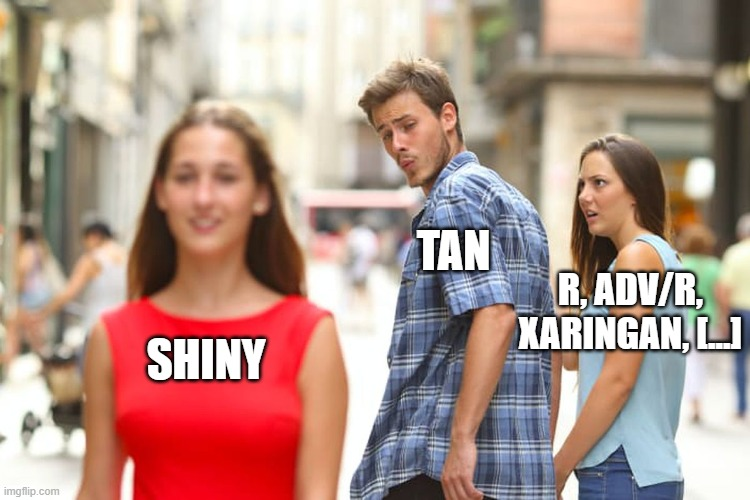

AdvR Book Club Ch 9 - Functionals
@_TanHo
2020-05-28
Intro
So lately we’ve been doing a lot of chapter recaps in these presentations, but…

… = “Actually doing a presentation”
So instead…
This time, let’s build a beer reviews app in Shiny!
Along the way, we’ll try to find (minimally contrived) opportunities to use:
map and friends like map2/pmap, lgl/chr/dbl
walk
reduce
modify
Some prerequisite assumptions I’m making here:
You’ve already read chapter 9 in the Adv R book (🤨)
You’ve read ch21 of R4DataScience (i.e. the chapter on purrr) (and/or)
You have some familiarity with purrr, lapply, or loops
You’ve heard of the glorious Shiny (it’s okay if you haven’t built an app before!)
I’ll be live-coding this, so feel free to chime in with questions, suggestions, and (frequent) reminders about forgetting parentheses () !
Dataset Overview
I first came across the Beer Reviews dataset from watching one of Nick Wan ’s Twitch streams, in which he does some really awesome live-code and data science.
From the Kaggle notes:
This data comes from BeerAdvocate and spans 10+ years of beer reviews on their platform up until Nov 2011, including ~1.5 million reviews. Each review includes ratings in terms of five “aspects”: appearance, aroma, palate, taste, and overall impression. Reviews include product and user information, followed by each of these five ratings, and a plaintext review.
While Nick dove down the datasci rabbithole with PCA, clustering, and recommender models, for today’s purposes we’ll be building a tool that collects beer ratings from users (i.e. you guys!) and compares your reviews with the reviews from the dataset!
Here’s what my setup chunk looks like and a brief skim of the raw data:
suppressPackageStartupMessages({
# Data Import
library(arrow)
library(here)
# Data manip
library(tidyverse)
# Shiny
library(shiny)
library(shinydashboard)
library(shinyWidgets)
library(learnr)
library(emo)
})
# Read data in via arrow for much fast
beer_reviews <- arrow::read_parquet(here::here("data/beer_reviews.pdata"))
# What does this data look like?
beer_reviews %>%
sample_n(10) %>%
str()## tibble [10 x 13] (S3: tbl_df/tbl/data.frame)
## $ brewery_id : num [1:10] 4 203 16503 140 45 ...
## $ brewery_name : chr [1:10] "Allagash Brewing Company" "Greene King / Morland Brewery" "Right Brain Brewery" "Sierra Nevada Brewing Co." ...
## $ review_time : num [1:10] 1.13e+09 1.17e+09 1.28e+09 1.27e+09 1.23e+09 ...
## $ review_overall : num [1:10] 4.5 3.5 4 3.5 4 4 3.5 3.5 5 3.5
## $ review_aroma : num [1:10] 4.5 3.5 4 4 5 4 4 3.5 5 3
## $ review_appearance : num [1:10] 4 4 4 4 4.5 4 3.5 4 4.5 4
## $ review_profilename: chr [1:10] "WesWes" "billybob" "GordonQuid" "berley31" ...
## $ beer_style : chr [1:10] "Belgian Strong Dark Ale" "English Pale Ale" "American IPA" "American Porter" ...
## $ review_palate : num [1:10] 4.5 4 4 3.5 4.5 4 3.5 3.5 4 4.5
## $ review_taste : num [1:10] 4.5 3.5 4 4 4.5 4.5 3.5 3.5 5 3.5
## $ beer_name : chr [1:10] "Allagash Odyssey" "Old Speckled Hen" "Dead Kettle IPA" "Sierra Nevada Porter" ...
## $ beer_abv : num [1:10] 10.3 5.2 5.4 5.6 8.5 7.2 5 6.7 8 5.2
## $ beer_beerid : num [1:10] 21363 637 51717 279 38700 ...
Game Plan
I’ve roadmapped a few features that I’d like to try to include (and should help demonstrate some FUNctionals)
Dynamically generate a review form for each beer selected from a picker (using map )
Add some filters to the select option so we can quickly find beers by type, review_count, and average rating (map/reduce )
Read back the ratings from the user! (map lgl/chr/dbl/int )
Write reviews to one csv per brewery (walk )
Data Cleaning
I’ve gone ahead and done a little bit of pre-emptive data cleaning 🧹 to help us just focus on the functionals in the app session later.
beers <- beer_reviews %>%
group_by(review_profilename) %>% # Scaling reviews by reviewer
mutate(reviewer_avg = mean(review_overall,na.rm = TRUE),
reviewer_sd = sd(review_overall,na.rm = TRUE),
reviewer_z = (review_overall - reviewer_avg)/reviewer_sd
) %>%
ungroup() %>%
group_by(brewery_id,brewery_name,beer_style,beer_id = beer_beerid, beer_name, beer_abv) %>%
summarise(
review_count = n(),
review_avg = mean(review_overall,na.rm = TRUE),
review_z = sum(reviewer_z,na.rm = TRUE),
review_meanz = review_z/review_count
) %>%
ungroup() %>%
top_n(5000,review_count) %>% # Trim to 5000 for app working purposes
arrange(desc(review_z)) # Fav beers to top, pls!## `summarise()` regrouping output by 'brewery_id', 'brewery_name', 'beer_style', 'beer_id', 'beer_name' (override with `.groups` argument)write_parquet(beers,here::here("Presentations/Week09/data/beers.pdata"))Inspecting the output:
beers %>%
top_n(10,review_z)
3 - Add dynamic filters
Prompt:
“Pass dynamic filters into the selectPicker so that we can more easily find beers by most-reviewed, type, and more”
Helpfully borrowing some code inspired by [Hadley’s new Mastering Shiny book], here’s a function that applies a “between” logical if the filter is numeric and an “in” logical if the filter is character.
(I learned this specifically for demonstrating purrr::reduce and would normally do these individually, whoops)
fn_filter <- function(x,val){
if(is.numeric(x)) {return(!is.na(x) & x >= val[[1]] & x<=val[[2]])}
if(is.character(x)) {return(x %in% val)}
TRUE
}Reminder: you can apply the & function to combine logicals together - it will only be TRUE if all elements are TRUE (and thus match the condition of multiple filters)
Solution
## UI ##
box(
title = "Filter the Picker", width = 6, status = 'primary',
sliderInput('review_count',"Review Count",
min = 0,max = 4000,step = 200,
value = c(2000,3000)),
br(),
pickerInput('beer_style',label = "Beer Style",
choices = unique(beers$beer_style),
selected = unique(beers$beer_style),
multiple = TRUE,
options = list(`selected-text-format` = "count>0",
`actions-box` = TRUE,
`live-search`=TRUE)),
br(),
sliderInput('review_avg',label = "Average Rating",
min = 0, max = 5, value = c(0,5), step = 0.25)
),
box(
title = "Select Beers to Review",
width = 6,
status = 'primary',
pickerInput( "selected_beers", "Beer Selection",
choices = beers$beer_name, selected = NULL,
multiple = TRUE,options = list(title = "Select Beer",
`selected-text-format` = "count>0",
`live-search` = TRUE)
)
)
## SERVER ##
filter_names <- c('review_count','beer_style','review_avg')
filtered_beernames <- reactive({
selected <- map(filter_names,~fn_filter(beers[[..1]],input[[..1]])) %>%
reduce(`&`)
beers %>%
filter(selected) %>%
pull(beer_name)
})
observeEvent(filtered_beernames(),{
updatePickerInput(session,"selected_beers",choices = filtered_beernames())
})
Beer Selection
Pliny The Elder
Weihenstephaner Hefeweissbier
Two Hearted Ale
Duvel
Founders Breakfast Stout
Bell's Hopslam Ale
La Fin Du Monde
Sierra Nevada Pale Ale
St. Bernardus Abt 12
Stone IPA (India Pale Ale)
Trappistes Rochefort 10
Tröegs Nugget Nectar
Founders KBS (Kentucky Breakfast Stout)
Sierra Nevada Celebration Ale
Old Rasputin Russian Imperial Stout
Ayinger Celebrator Doppelbock
Trappist Westvleteren 12
90 Minute IPA
Stone Imperial Russian Stout
Samuel Smith's Oatmeal Stout
60 Minute IPA
Great Lakes Edmund Fitzgerald Porter
Chimay Grande Réserve (Blue)
Stone Ruination IPA
Prima Pils
The Abyss
Hennepin (Farmhouse Saison)
Sculpin India Pale Ale
Racer 5 India Pale Ale
Schneider Aventinus
Alpha King Pale Ale
Hop Rod Rye
Dreadnaught IPA
Gumballhead
HopDevil Ale
Trappistes Rochefort 8
Arrogant Bastard Ale
Samuel Adams Boston Lager
Péché Mortel (Imperial Stout Au Cafe)
Blind Pig IPA
Supplication
Furious
Storm King Stout
Young's Double Chocolate Stout
Maudite
Northern Hemisphere Harvest Wet Hop Ale
Shakespeare Oatmeal Stout
Samuel Smith's Imperial Stout
Orval Trappist Ale
Fuller's London Porter
Westmalle Trappist Tripel
Franziskaner Hefe-Weisse
Saison Dupont
Ten FIDY
Fuller's ESB
Founders Red's Rye PA
Paulaner Hefe-Weissbier Naturtrüb
Trois Pistoles
Sierra Nevada Torpedo Extra IPA
Chocolate Stout
Dead Guy Ale
Allagash White
Hoegaarden Original White Ale
Sierra Nevada Kellerweis Hefeweizen
Anchor Steam Beer
Trappist Westvleteren 8
Founders CBS Imperial Stout
AleSmith Speedway Stout
Samuel Smith's Nut Brown Ale
Hop Stoopid
Weihenstephaner Hefeweissbier Dunkel
Black Butte Porter
Samuel Smith's, The Famous Taddy Porter
Temptation
Great Lakes Dortmunder Gold
Anchor Porter
Oaked Arrogant Bastard Ale
Smuttynose IPA "Finest Kind"
Double Bastard Ale
Masala Mama India Pale Ale
AleSmith IPA
St. Bernardus Tripel
Tripel Karmeliet
Founders Centennial IPA
Brooklyn Black Chocolate Stout
Samuel Adams Noble Pils
Anchor Liberty Ale
Pliny The Younger
Sierra Nevada Stout
Chimay Première (Red)
Titan IPA
Stone Smoked Porter
Fuller's London Pride
Heady Topper
Fantôme Saison
Stone Sublimely Self-Righteous Ale
Tröegs Hopback Amber Ale
Founders Imperial Stout
Chimay Tripel (White)
Indian Brown Ale
Consecration
Houblon Chouffe Dobbelen IPA Tripel
Big Bear Black Stout
Bell's Oberon Ale
Westmalle Trappist Dubbel
Parabola
Founders Porter
Weihenstephaner Korbinian
Great Lakes Eliot Ness
Dale's Pale Ale
Wisconsin Belgian Red
Bourbon County Brand Stout
Yeti Imperial Stout
Obsidian Stout
Sierra Nevada Southern Hemisphere Harvest Fresh Hop Ale
Abrasive Ale
Ommegang (Abbey Ale)
Don de Dieu
A Little Sumpin' Sumpin' Ale
Ayinger Bräu Weisse
Great Lakes Blackout Stout
Weihenstephaner Vitus
Bender
Green Flash West Coast I.P.A.
YuleSmith (Summer)
Sierra Nevada Porter
Portsmouth Kate The Great
Oak Aged Yeti Imperial Stout
Great Lakes Burning River Pale Ale
Delirium Tremens
Bell's Kalamazoo Stout
Weihenstephaner Original
Pannepot
Union Jack India Pale Ale
Pure Hoppiness
Terrapin Coffee Oatmeal Imperial Stout
Hercules Double IPA
Darkness
Brutal Bitter Ale
Red Rocket Ale
Cadillac Mountain Stout
Damnation
Dark Lord Imperial Stout
Maharaja
Hazelnut Brown Nectar
Stone Levitation Ale
Founders Double Trouble
B.O.R.I.S. The Crusher Oatmeal-Imperial Stout
Zombie Dust
Hacker-Pschorr Hefe Weisse Natürtrub
G'Knight Imperial Red Ale
St. Bernardus Prior 8
Heavy Seas - Loose Cannon (Hop3 Ale)
Rare Vos (Amber Ale)
Raspberry Tart
La Chouffe
Smuttynose Robust Porter
Sierra Nevada Anniversary Ale (2007-2009)
Stone Pale Ale
Trappistes Rochefort 6
Sierra Nevada Bigfoot Barleywine Style Ale
Brooklyn Lager
Weihenstephaner Kristallweissbier
Rodenbach Grand Cru
Live Oak HefeWeizen
Siberian Night Imperial Stout
Double Jack
Gulden Draak (Dark Triple)
Three Philosophers Belgian Style Blend (Quadrupel)
Paulaner Oktoberfest-Märzen
Hop Wallop
Alaskan Smoked Porter
St. Bernardus Witbier
Founders Harvest Ale
Allagash Tripel Ale
Flower Power India Pale Ale
Samuel Adams Cream Stout
Choklat
Cuvée Van De Keizer Blauw (Blue)
Black Albert
Sanctification
Ruedrich's Red Seal Ale
Nelson
Drie Fonteinen Oude Geuze
Saison - Brett
Pride & Joy Mild Ale
Daisy Cutter Pale Ale
Stone 15th Anniversary Escondidian Imperial Black IPA
Schneider Weisse Original
Sofie
Alpha Klaus Christmas (Xmas) Porter
§ucaba (Abacus)
Red Racer IPA
Dancing Man Wheat
Thomas Hooker Liberator Doppelbock
Barney Flats Oatmeal Stout
Hunahpu's Imperial Stout
Burton Baton
Coffee Bender
Trappist Westvleteren Blonde
St. Bernardus Pater 6
Sweetwater IPA
Fuller's 1845
Duet IPA
Brute
Old Ruffian Barley Wine
Brooklyn Local 1
Sinebrychoff Porter
Odell IPA
La Terrible
Hacker-Pschorr Oktoberfest-Märzen
Fresh Hop Pale Ale
Mirror Pond Pale Ale
Traquair House Ale
Girardin Gueuze 1882 (Black Label)
Cantillon Saint Lamvinus
Bourbon County Brand Coffee Stout
Beer Geek Brunch Weasel
Honker's Ale
Köstritzer Schwarzbier
Citra DIPA
Lagunitas Sucks Holiday Ale
Avec Les Bons Voeux
Andechser Doppelbock Dunkel
Blanche De Chambly
Bell's Special Double Cream Stout
Ayinger Oktober Fest-Märzen
Big Eye IPA
Rare Bourbon County Stout
Jai Alai IPA
Old Engine Oil
St-Ambroise Oatmeal Stout
Bitter Brewer
Hop Ottin' IPA
Cantillon Gueuze 100% Lambic
Bell's Amber Ale
Terrapin Rye Pale Ale
IPA (India Pale Ale)
Victory At Sea Coffee Vanilla Imperial Porter
Sierra Nevada Summerfest Lager
Lagunitas Lucky 13 Mondo Large Red Ale
30th Anniversary - Fritz And Ken's Ale
Double White Ale
Samuel Adams Black Lager
Hop Trip (Bond Street Series)
Schneider Wiesen Edel-Weisse Mein Grunes
Wipeout I.P.A.
1554 Enlightened Black Ale
2XIPA
Redemption
Beatification
Smuttynose Old Brown Dog Ale
Guinness Foreign Extra Stout
Exponential Hoppiness
India Pale Ale
Miles Davis' Bitches Brew
Reissdorf Kölsch
A Little Sumpin' Wild
Beamish Irish Stout
Ayinger Jahrhundert Bier
J.W. Lees Vintage Harvest Ale
Aphrodisiaque
Unearthly (Imperial India Pale Ale)
Beer Geek Breakfast
Goudenband
Fuller's Vintage Ale
Hop Sun (Summer Wheat Beer)
Tröegs Pale Ale
Lion Stout
Professor Fritz Briem 1809 Berliner Weisse
Wet
Rodenbach Classic (Red)
Wee Heavy
XS Imperial India Pale Ale
Pranqster
Black Butte XXI
Adam
Myrcenary Double IPA
Ayinger Ur-Weisse
Abbaye Des Rocs Grand Cru Belgian Special Brown
Old Chub - Scottish Style Ale
Broo Doo
The Oracle
Great Lakes Nosferatu
Cantillon Fou' Foune
Moon Man
La Folie
Murphy's Irish Stout
Mönchshof Schwarzbier
Lindemans Gueuze Cuvée René
Just Outstanding IPA
Bell's Porter
Lagunitas IPA
Bell's Expedition Stout
Smuttynose Baltic Porter (Big Beer Series)
Double Simcoe IPA
Cane & Ebel
Samuel Smith's Old Brewery Pale Ale
CynicAle
Espresso Oak Aged Yeti Imperial Stout
Mackeson Triple XXX Stout
Black Bavarian
Stone Cali-Belgique
Young's Oatmeal Stout
St. Bernardus Abt 12 (60th Anniversary "Special Edition")
Left Hand Milk Stout
Allagash Odyssey
American Amber Ale
Brooklyn Sorachi Ace
Traquair Jacobite
Imperial Stout Trooper
Modus Hoperandi
De Ranke XX Bitter
Uerige Sticke
Kuhnhenn Bourbon Barrel Fourth Dementia
Kuhnhenn Raspberry Eisbock
Plead The 5th Imperial Stout
Corsendonk Christmas Ale
Oro De Calabaza
Allagash Grand Cru
Cantillon Lou Pepe - Kriek
Allagash Curieux (Bourbon Barrel-Aged Tripel)
Tank 7 Farmhouse Ale
Older Viscosity
Duck Duck Gooze
Estate Homegrown Wet Hop Ale
30th Anniversary - Grand Cru
Gonzo Imperial Porter
Hop 15
Lips Of Faith - Le Terroir
Great Lakes Oktoberfest
Okocim Porter
India Pale Ale (IPA)
Brewhouse Coffee Stout
Abbaye Des Rocs [Brasserie Des Rocs Brune]
Duchesse De Bourgogne
Ølfabrikken Porter
Racer X
Harvest Ale
Brian Boru Old Irish Red
Odell Cutthroat Porter
Tröegs Sunshine Pils
Black Sun Stout
Captain's Reserve Imperial IPA
SkullSplitter
Hitachino Nest White Ale
Arctic Panzer Wolf
Cantillon Blåbær Lambik
Red Poppy Ale
Lagunitas Imperial Red Ale
Ayinger Altbairisch Dunkel
Stone 10th Anniversary IPA
Green Flash Hop Head Red Ale
Carnegie Porter 5,5%
Barrel Aged B.O.R.I.S. Oatmeal Imperial Stout
Squall IPA
Pale 31
Double Stout
Great Lakes Barrel-Aged Blackout Stout
Ayinger Weizenbock
Jack D'or
Imperial IPA
Peeper Ale
Allagash Interlude
Hottenroth Berliner Weisse
Gandhi-Bot Double IPA
Black Tuesday
Devil Over A Barrel - Bourbon Barrel-Aged Coffee Imperial Oatmeal Porter
Terrapin Big Hoppy Monster
Abbey Belgian Style Ale
Night Stalker
Zoe
Old Horizontal
Ellie's Brown Ale
Theakston Old Peculier
Allagash Black
Ipswich Oatmeal Stout
Samuel Smith's Organically Produced Ale
Bell's Best Brown
Mongo
Founders Backwoods Bastard
Trappist Achel 8° Bruin
Flying Mouflan
My Antonia
La Trappe Quadrupel (Koningshoeven / Dominus)
AleSmith Speedway Stout - Barrel Aged
Founders Dirty Bastard
Mocha Porter
Ranger
Apple Ale
Palo Santo Marron
Pannepot Reserva
Hofbräu Original
High Tide Fresh Hop IPA
Salvator Doppel Bock
Cable Car
Foret
Imperial Stout
Raging Bitch Belgian-Style IPA
Brasserie Des Rocs Triple Impériale
Christmas Ale
Stoudt's Fat Dog (Imperial Oatmeal Stout)
DreamWeaver Wheat
Moloko
Gouden Carolus Tripel
Sierra Nevada Tumbler Autumn Brown Ale
Serpent's Stout
Isabelle Proximus
Lukcy 13asartd Ale
Autumnal Fire
Southampton Grand Cru
Hop Hearty Ale
Founders Blushing Monk
Bourbon County Brand Vanilla Stout
Ommegang Witte
Short's Huma-Lupa-Licious IPA
Oude Gueuze
Drie Fonteinen Schaerbeekse Kriek
Hop Henge Experimental IPA
Blue Dot Double India Pale Ale
Kapuziner Weissbier
Mother Of All Storms
Cantillon Iris
Columbus IPA
O'Hara's Irish Stout
Hoppe (Imperial Extra Pale Ale)
Crack'd Wheat
Olde GnarlyWine
Old Rasputin XII
Dark Horse Double Crooked Tree IPA
Stoudts Pils
Reality Czeck
Schneider-Brooklyner Hopfen-Weisse
Cantillon Rosé De Gambrinus
Perkuno's Hammer Imperial Porter
Corsendonk Pater / Abbey Brown Ale
SurlyFest
DuganA IPA
New Holland The Poet
Vanilla Bean Aged Dark Lord
Double Bag
AleSmith Wee Heavy
Julius Echter Hefe-Weissbier Hell
Hibernation Ale
Session Lager
Dark Horse Crooked Tree IPA
Bitter Woman India Pale Ale
Budweiser Budvar
Mirror Mirror
XP Pale Ale
Samuel Smith's Organically Produced Lager Beer
AleSmith Old Numbskull
Iniquity (Imperial Black Ale)
A Little Sumpin' Extra! Ale
Firestone 13 - Anniversary Ale
Spaten Optimator
Sierra Nevada Estate Brewers Harvest Ale
Black Butte XX
Bluebird Bitter
Gemini (Imperial Blended Ale)
Cantillon Cuvée Des Champions
CoCoNut Porter
Cuvee De Tomme
Unplugged Bohemian Lager
Ivan The Terrible
Saison Deluxe
Maduro Oatmeal Brown Ale
Saison De Lente
Ramstein Winter Wheat
Old Viscosity
Snake River Zonker Stout
Dorado Double IPA
Corsendonk Agnus / Abbey Pale Ale
Allagash FOUR
Paulaner Original Münchner
Coffeehouse Porter
Sunrise Weiss
Deviation - Bottleworks 9th Anniversary
AleSmith X
Stoudt's Gold Lager
Brooklyn Local 2
Young's Special London Ale
Aecht Schlenkerla Helles Lagerbier
Big Black Voodoo Daddy
Lunch
Great Lakes Commodore Perry IPA
The Dissident
Cuvee De Castleton
Bam Bière
Samuel Adams Boston Ale (Stock Ale)
Weltenburger Kloster Asam-Bock
Kriek De Ranke
Unplugged Cranbic Ale
Silva Stout
Bully! Porter
Great Lakes Conway's Irish Ale
Poperings Hommel Bier
Maredsous 8 - Dubbel
Firestone 14 - Anniversary Ale
Schneider Aventinus Weizen-Eisbock
Ommegang BPA (Belgian-style Pale Ale)
Velvet Merlin (Merkin)
Belhaven Scottish Ale
Gouden Carolus Classic
De Dolle Oerbier
Pilsner Urquell
Kuhnhenn Fourth Dementia (4D)
Ephraim
Behemoth Blonde Barleywine
St-Ambroise Pale Ale
Boont Amber Ale
Firestone 11 - Anniversary Ale
Moonglow Weizenbock
Nostradamus
Olde Suffolk English (Strong Suffolk Vintage) Ale
Sexual Chocolate
Piraat Ale
Salvation
Affligem Blond
Brooklyn Black OPS
Dominion Oak Barrel Stout
The Angel's Share - Bourbon Barrel-Aged
Franziskaner Hefe-Weisse Dunkel
Mojo IPA
Great Lakes Holy Moses
Duvel Tripel Hop
Unplugged Berliner Weiss
Moinette Blond
Spaten Münchner Hell (Premium Lager)
Red Chair NWPA
Hop In The Dark Cascadian Dark Ale
Boy King Double IPA
Jubelale
Cantillon Kriek 100% Lambic
Tucher Helles Hefe Weizen
Trappist Achel 8° Blond
Bourbon Barrel Quad (BBQ)
Schlafly Pumpkin Ale
Fat Squirrel Ale
Ola Dubh Special Reserve 30
Staghorn Octoberfest
Fantôme Saison D'Erezée - Printemps
Samuel Adams Utopias
Smuttynose Shoals Pale Ale
Caldera IPA
King Henry
Brooklyner-Schneider Hopfen-Weisse
Sierra Nevada ESB (Early Spring Beer)
London Porter
White Knuckle Double IPA
Smuttynose Imperial Stout (Big Beer Series)
St. Victorious
Black Butte XXIII
Oud Beersel Oude Kriek Vieille
Scrimshaw Pilsner
Leipziger Gose
Val-Dieu Triple
McChouffe
Fred
Damnation Batch 23 (Oak Aged)
Matt
Cantillon Lou Pepe - Gueuze
Namaste
Third Coast Old Ale
Affligem Noël
Saison
Stone 12th Anniversary Bitter Chocolate Oatmeal Stout
Tröegs Perpetual IPA
Doggie Claws
Oud Beersel Oude Geuze Vieille
Knuckle Sandwich
Harvest Ale
DeuS (Brut Des Flandres)
Festbier
Lost Sailor India Pale Ale
Old Stock Cellar Reserve (Aged In Bourbon Barrels)
Stone 08.08.08 Vertical Epic Ale
Firestone 12 - Anniversary Ale
Edward Pale Ale
Pikeland Pils
Juliet
Smoke
Kulmbacher Reichelbrau Eisbock
Matilda
Trumer Pils
Big Sky IPA
Mischief
Apocalypse Cow
LeBleu
Morimoto Imperial Pilsner
Wells Bombardier (English Premium Bitter)
Thomas Hooker Imperial Porter
N'Ice Chouffe
Tröegs Oatmeal Stout
New Holland Mad Hatter India Pale Ale
Czar Jack Imperial Stout
St. Lupulin
Unplugged Enigma
Wolaver's Oatmeal Stout
Younger's Special Bitter
Gratitude
Little Creatures Pale Ale
Cantillon Gueuze 100% Lambic-Bio (Organic Gueuze)
Duck-Rabbit Baltic Porter
Cantillon Vigneronne
Bell's Batch 7000
Red Barn Ale
Achel Trappist Extra
Saison Rue
Dirty Old Man Imperial Rye Porter
Hell
Hofbräu Münchner Weisse
Dragon's Tooth Oatmeal Stout
Arctic Devil Barley Wine
Fantôme Saison D'Erezée - Hiver
Calabaza Blanca
Abner Imperial IPA
The Devil Made Me Do It! Coffee Imperial Oatmeal Porter
Young's Old Nick Barley Wine Ale
India Pale Ale
Bourbon Barrel Barleywine
Veritas 004
Founders Black Biscuit
Founders Black Rye
Boon Oude Geuze Mariage Parfait
Odin's Tipple
Gnomegang
Calico Copper Amber Ale
Bell's Black Note Stout
De Dolle Dulle Teve (Mad Bitch)
New Dogtown Pale Ale
Steelhead Extra Stout
Cantillon Lou Pepe - Framboise
Tucher Bajuvator Doppelbock
Luciérnaga, The Firefly
Gouden Carolus Hopsinjoor
Geuze Cuvée J&J (Joost En Jessie) Blauw (Blue)
Berkshire Russian Imperial Stout
Belhaven Scottish Stout
Unibroue 11
Southampton Imperial Baltic Porter
30th Anniversary - Jack & Ken's Ale
Poleeko Gold Pale Ale
Imperial Stout
Sierra Nevada Chico Estate Harvest Wet Hop Ale (2008)
Censored
Oak Aged Dark Lord Imperial Stout
Buried Hatchet Stout
Best Of Beer Camp: Weizenbock - Beer Camp #37
32/50
Highland Gaelic Ale
Insanity
Double Sunshine IPA
Hoptober Golden Ale
Highland Oatmeal Porter
Mayflower Porter
Double IPA (Brewmaster Series)
Pannepot Grand Reserva
Long Strange Tripel
Green Flash Imperial India Pale Ale
Terrapin Hop Karma IPA
Hacker-Pschorr Dunkle Weisse
Oude Tart
Noel De Calabaza
Great Lakes Moondog ESB
Drie Fonteinen Oude Kriek
White Rajah
Barrel Aged Sexual Chocolate
Pisgah Valdez
Landlord - Strong Pale Ale
Penn Dark
Samuel Smith's Pure Brewed Lager Beer
Everett Robust Porter
Saint Botolph's Town
Abbaye De Saint Bon-Chien
Saint Arnold Divine Reserve #5
Cascade Kriek Ale
Russian River IPA
Geary's Hampshire Special Ale
Jubel 2010 (Once A Decade Ale)
Moylander Double IPA
Righteous Ale
Ola Dubh Special Reserve 12
Anvil Ale ESB
D.O.R.I.S. The Destroyer Double Imperial Stout
Bitter & Twisted
Cinder Cone Red
Leatherlips IPA
De Ranke Guldenberg
Lindemans Pêche
CoCoNut Porter
San Diego County Session Ale
Old Heathen Imperial Stout
Ale To The Chief
3 Monts
Guava Grove Saison
Nut Brown Ale
Robert The Bruce Scottish Ale
Southampton Saison
Wachusett Larry
Bitter Monk
God Jul
Samuel Smith's Yorkshire Stingo
Celis White
Collaboration No. 2 - White IPA
Guinness Special Export Stout (John Martin - Belgium)
Samuel Smith's India Ale
Collaboration No. 1 - Imperial Pilsner
Whirlwind Witbier
Uerige Doppelsticke
Highland Cold Mountain Winter Ale
Ipswich Original Ale
Hoppy Birthday
Galaxy Imperial Single Hop IPA
India Pale Ale
Lips Of Faith - Eric's Ale
Inversion IPA
Ommegang Rouge
Highland Black Mocha Stout
Marshal Zhukov's Imperial Stout
Armand'4 Oude Geuze Lente (Spring)
The Event Horizon
75 Minute IPA
Unplugged Smoke On The Porter
ÜberSun (Imperial Summer Wheat Beer)
Dark Horse Bourbon Barrel Aged Plead The 5th
Saison D'Erpe-Mere
Black Marlin Porter
Watou Tripel
De Dolle Bos Keun
Troegenator Double Bock
Kaggen! Stormaktsporter
Carnevale
Pike Street XXXXX Stout
St. Andrew's Ale
Bell's Batch 6000
Haandbakk
Uerige Altbier (Classic)
Unibroue 17
Mighty Arrow Pale Ale
Ola Dubh Special Reserve 16
Fade To Black Volume 1 - Foreign Export Stout
Cuvee Des Jacobins Rouge
Urthel Hibernus Quentum
Maximus
The Sixth Glass
Death & Taxes Black Beer
Yokel
Barrel Aged Yeti
Stone 09.09.09 Vertical Epic Ale
Thomas Hooker Munich Style Lager
Odell 90 Shilling Ale
Mango Mama
Framboise De Amorosa
Brooklyner Weisse
Toronado 20th Anniversary Ale
Alaskan Barley Wine (Pilot Series)
Unibroue 10
Wooden Hell
Pete's Brown (Tribute Ale)
Harpoon Leviathan - Imperial IPA
Porter
Über Pils
Black Wheat
Chatoe Rogue First Growth Dirtoir Black Lager
Aecht Schlenkerla Eiche
Headwaters Pale Ale
Milk Stout
Zywiec Porter
Augustiner Bräu Edelstoff
Raftman
Schneider Weisse Weizenhell (Hefeweizen)
Inferno Ale
Fantôme Pissenlit
Drie Fonteinen Oude Geuze Vintage
Bière De Mars
Trippel Belgian Style Ale
Hop Whore
Imperial Russian Stout
St. Peter's Cream Stout
Tricerahops Double IPA
Le Merle
Penn Weizen
Tuppers' Hop Pocket Pils (Keller Pils)
Belgian Style Yeti
Dark Horse Reserve Special Black Bier Ale
Terrapin Moo-Hoo Chocolate Milk Stout
Dragonslayer
Exit 16
Imperial Eclipse Stout - Evan Williams Bourbon
Perdition
Bitter American
St. Peter's Old-Style Porter
Pine Belt Pale Ale
Uncle Teddy's Bitter
Dernière Volonté
2009 Correction Ale
Bad Boy
Terrapin Midnight Project Depth Charge Espresso Milk Stout
Hopworks IPA
Peruvian Morning
Malheur 10°
Summit Extra Pale Ale
Heavy Seas - Small Craft Warning (Über Pils)
Saxo
Fantôme Saison D'Erezée - Été
De Proef Reserve Signature Ale (w/ Tomme Arthur)
Southern Pecan
Imperial Eclipse Stout - Elijah Craig (12 Year)
LongShot Traditional Bock
Berserker Imperial Stout
Doubly Down 'N Even Dirtier
Humulus Lager
Cherry Adam From The Wood
Midnight Expression
Smooth Hoperator
Drie Fonteinen Hommage
Panil Barriquée (Italy Version)
Maple Bacon Coffee Porter
Sweet Action
Pannepøt - Old Monk's Ale
Struiselensis
Workhorse IPA
Brewer's Reserve Bourbon Barrel Stout
Hoptimus Prime
8 Ball Stout
Augustiner Bräu Lagerbier Hell
Dark Horse Tres Blueberry Stout
Rosso E Marrone
AleSmith Grand Cru Ale
St. Nikolaus Bock Bier
Lord Admiral Nelson
Dominus Vobiscum Lupulus
Apex
TREAT (Imperial Chocolate Pumpkin Porter)
Cascazilla
Weizen Bam
Firestone 15 - Anniversary Ale
Oatmeal Stout
Tröegs Dead Reckoning Porter
Cascade Apricot Ale
Brooklyn Blast Pale Ale
Two Women Lager
Cantillon Crianza Helena
Mokah
Brooklyn Oktoberfest Beer
Coopers Best Extra Stout
LongShot Dortmunder Style Export
La Trappe Dubbel (Koningshoeven / Dominus)
Hercule Stout
PILZILLA
YuleSmith (Winter)
Troublette
Gaffel Kölsch
Wilco Tango Foxtrot
Thomas Hardy's Ale (1968-1999)
Kill Ugly Radio
Jahva (Imperial Coffee Stout)
Stone IPA Double Dry Hopped
Kriekbier
Shade Grown Coffee Porter
Unibroue 15
Arcadia London Porter
Paulaner Premium Pils
Mild Winter
Cellar Door
Portsmouth Bottle Rocket IPA
Stone Imperial Russian Stout Aged In Bourbon Barrels
Urthel Hop-It
Double Chocolate Stout
Thomas Hooker Hop Meadow IPA
Adam From The Wood
Jai Alai IPA - Cedar Aged (Humidor Series)
Fuego Del Otono, Autumn Fire
Backburner (Imperial Barley Wine Style Ale)
Blackheart
Double Wide I.P.A.
Bengali Tiger
Highland Tasgall Ale
Schlafly American IPA
Great Lakes Glockenspiel Weizenbock
Smuttynose Maibock (Big Beer Series)
Xtra Gold Tripel
Saint Arnold Divine Reserve #11
Unplugged Imperial IPA
Coffee Stout
Fat Head's Head Hunter IPA
Val-Dieu Brune
Berkshire Bourbon Barrel Scotch Ale
Cold Hop British-Style Ale
The Angel's Share Grand Cru
Irish Ale
Creemore Springs Premium Lager
Nielsbohrium
Taras Boulba
Old #38 Stout
Bière De Mars - Grand Reserve
Bourbon Barrel Aged Shipwreck Porter
De Dolle Arabier
American Darling
Sea Monster Imperial Stout
Jaipur IPA
Tuppers' Hop Pocket Ale
Big Sound Scotch Ale
Drifter Pale Ale
José Martí India Porter
Fuller's India Pale Ale
Chocolate Rain
Wild Dog Barrel-Aged Gonzo Imperial Porter
India Pelican Ale
Black Metal Imperial Stout
St. Nikolaus Bock Bier - Brewer's Reserve
Maduro Oatmeal Brown Ale - Cubano-Style Espresso
St. Feuillien Triple
New World Porter
Ambergeddon
Full Sail Amber
Cantillon Pinot D'Aunis
Sue
Penn Gold
Foothills Baltic Porter
Brooklyn Pilsner
Paulaner Wiesn Bier
Black Sheep Ale (Special)
Old Rasputin XI
Stoudts American Pale Ale
Class V Stout
Summit Great Northern Porter
Osiris Pale Ale
Old Stock Ale
Black Damnation II - Mocha Bomb
Full Moon Pale Rye Ale
Wildcat India Pale Ale
St. Feuillien Cuvée De Noël
Imperial Porter (Brewmaster Series)
Young's Ram Rod
Andechser Weissbier Hefetrüb
Jai Alai IPA - White Oak
Stone 8th Anniversary Ale
Lagunitas Sneak Release Undercover Investigation Shut-Down Ale
Phoenix Kriek
De Proef Signature Les Deux Brasseurs Ale (w/Jason Perkins)
Affligem Tripel
Stone 7th Anniversary Ale
Oat (Imperial Oatmeal Stout)
EisPhyre
Kona Coffee Macadamia Coconut Porter
Tannenzäpfle
Deuchars IPA
Simcoe Single Hop IPA
Southampton May Bock
Belhaven Twisted Thistle IPA
Frambozenbier
Schlafly Kölsch
Our Special Ale 2009 (Anchor Christmas Ale)
Black Damnation V - Double Black
Hoss
Eau Benite
Bourbon Barrel Aged Hi-Fi Rye
Dark Island
Braumeister Harvest Pils
Schlafly Dry-Hopped American Pale Ale
Four
R&D Golden Ale
Great
Alexander Rodenbach
Oude Lambiek De Cam
König Ludwig Weiss (Royal Bavarian Hefe-Weizen)
Fresh Chester Pale Ale
New River Pale Ale
Kuhnhenn Bourbon Barrel Barley Wine
Splinter Blue
La Rullés Triple (Bière De Gaume)
Avril
St. Amatus 12
Drayman's Porter
Pipeline Porter
Our Special Ale 2007 (Anchor Christmas Ale)
Schlafly Reserve - Imperial Stout
Framboise For A Cure
Exit 11
Chief BlackHawk Porter
Green Flash Le Freak
5 Barrel Pale Ale
Mönchshof Kellerbier (Kellerbräu)
Cuir
Fred From The Wood
O'Brien's IPA
Flaming Fury
Black Cat
Juniper Black Ale (JBA) - Beer Camp #16
Imperial IPA
Riverwest Stein Beer
Southampton Cuvee Des Fleurs
Karnival Kolsch
Cascade Sang Rouge
Bert Grant's Perfect Porter
Malheur Bière Brut (Brut Reserve)
Session Black Lager
Allagash Confluence Ale
Stone Old Guardian Barley Wine Style Ale 2004
Alaskan Baltic Porter (Pilot Series)
Troubadour Blond Ale
Hoegaarden Grand Cru
Porter
Hunahpu's Imperial Stout - Laird's Apple Brandy Barrel
Scratch Beer 27 - 2010 (Cocaoabunga)
La Moneuse
Duck-Rabbit Schwarzbier
Veritas 003
Elm City Lager
Tripel Perfection
Anchor Bock Beer
AleSmith Decadence 2006 (Dead By Dawn)
Fantôme Brise-BonBons
Three Hour Tour
Old Stock Cellar Reserve (Aged In Brandy Barrels)
Green Lakes Organic Ale
Trader Joe's Stockyard Oatmeal Stout
Dark Horizon 1st Edition
Devotion Ale
Quatre-Centième Brassin Commémoratif
Val-Dieu Grand Cru
Harpoon Munich Type Dark Beer
Oude Gueuze Tilquin à L’Ancienne
St-Ambroise Stout Impériale Russe
AleSmith Decadence 2007 Imperial Porter
Porter
Tsunami Stout
Pullman Brown Ale
La Bavaisienne
White Gold
Thumb Print IIPA
Cascade Sang Royal
Bell's Rye Stout
Seeing Double IPA
20th Anniversary Pilsner
Donnybrook Stout
Saison D'Epeautre
Vichtenaar
Adnams SSB (Suffolk Special Bitter)
Smuttynose S'muttonator (Big Beer Series)
Lake Louie Warped Speed Scotch Ale
Stone Old Guardian Barley Wine Style Ale 2003
Maracaibo Especial
Saint Arnold Elissa IPA
He'Brew Jewbelation Vertical (Rye Whiskey Barrel Aged Blend)
Deliverance
Alphalpha
Stone 04.04.04 Vertical Epic Ale
# 100
Hoppy Feet 1.5
Southampton Keller Pils
Steelhead Scotch Porter
Mad King's Weiss
Thomas Hooker Octoberfest Lager
Hofbräu Maibock (Urbock)
Compunction
Flandre-Kent Les Frères De La Bière / Thiriez XXtra
Unibroue 16
Firestone 10 - Anniversary Ale
Coffee Stout (Brewmaster Series)
Sünner Kölsch
Full Moon Pale Ale
Berkshire Ale Traditional Pale Ale
Maibock
Smuttynose Farmhouse Ale (Big Beer Series)
Les Bière Des Sans Culottes
Lot No3 India Pale Ale
La Trappe Isid'or
Baltic Thunder
Liquid Gold
La Roja
Veritas 007
Our Special Ale 2003 (Anchor Christmas Ale)
Lips Of Faith - Dunkel Weiss
Hog Heaven Barley Wine
Special Edition - Imperial IPA
Sinners Blend 2008
Twilight Ale
Schwelmer Weizen
Stone Ruination IPA Double Dry Hopped
Old Backus Barleywine
Edel-Pils
Radeberger Pilsner
Augustiner Bräu Maximator
Fantôme BBB Dark White
Pikeland Pils
Woody Creek White
Two Jokers Double-Wit
Jamaica Red Ale
Cuvée De Ranke
Survival "7-Grain" Stout
Mahr's Ungespundet-hefetrüb
Stone 6th Anniversary Porter
Urthel Samaranth
Mayflower IPA
Killer "Kapowski" Kowalski
Stone Old Guardian Barley Wine Style Ale 2010
Dominus Vobiscum Blanche
Aecht Schlenkerla Rauchbier Märzen
Prohibition Ale
Ola Dubh Special Reserve 40
Fantôme Magic Ghost
Fade To Black Volume 2 - Smoked Baltic Porter
Bachelor ESB
Summit India Style Rye Ale
Monk's Cafe Cuvee De Monk's Gueuze
Aecht Schlenkerla Fastenbier
Les Trois Mousquetaires Porter Baltique
Depuration
Russian Imperial Stout
Baudelaire IO
Smuttynose Ry(e)an Ale
Big Barrel Double IPA
Christoffel Bier
Black H2O Oatmeal Stout
2007 Vintage Oak Aged Ale (Barrel No. 230)
Fantôme La Gourmande
Drake's Drakonic Imperial Stout
Smuttynose Scotch Style Ale (Big Beer Series)
Julius Echter Hefe-Weissbier Dunkel
Maiden The Shade
Heavy Seas - Winter Storm ("Category 5" Ale)
10th Anniversary Double India Pale Ale
Cascade Bourbonic Plague
R&D Bourbon Barrel Kriek
Nor' Easter
Pleasantville Smoked Porter
Baladin Nora
Creemore Springs Kellerbier
Cascade Cuvée Du Jongleur
Original Flag Porter
Mill Street Tankhouse Ale
König Pilsener
Herold Bohemian Black Lager
Summit Oatmeal Stout
Saison VOS
Ten FIDY (Whiskey Barrel)
Cascade Vlad The Imp Aler
Odell Isolation Ale
AleSmith Decadence 2007 Imperial Porter Barrel Aged
Denver Pale Ale
The Wise ESB
Hop Knot
Harvest Dance
Schlafly Winter ESB
J.W. Lees Harvest Ale (Port Cask)
Denison's Weissbier
Pozharnik
St. Georgenbräu Keller Bier
30th Anniversary- Charlie, Fred And Ken's Bock
St. Boisterous
Collaboration Series: Marrón Acidifié
HopArt IPA
Riggwelter Yorkshire Ale
Flywheel Bright Lager
5 Day IPA
Portsmouth Black Cat Stout
Deep Shaft Stout
Kosmyk Charlie Y2K Catastrophe Ale
Scurvy
Oude Geuze De Cam
Tröegs Rugged Trail Nut Brown Ale
Our Special Ale 2004 (Anchor Christmas Ale)
Labyrinth Black Ale
Sui Generis
Cottrell Old Yankee Ale
Stone Smoked Porter With Vanilla Bean
Stone 03.03.03 Vertical Epic Ale
Traquair 2020
Demolition
Hopalicious
Love Buzz Saison
Mountain Standard Double Black IPA
AleSmith Nautical Nut Brown Ale
Cuvee-Brut
Stateside Saison
Big Swell IPA
Tocobaga Red Ale
Red Eye Coffee Porter
Planet Bean Coffee Stout
Stone Old Guardian Barley Wine Style Ale 2006
Unplugged Imperial Weizen
December 6th, 1855 EIP
Harpoon Summer Beer
Terrapin Hop Shortage Ale
Gossamer Golden Ale
Double Stout
Anchor Humming Ale
Mama's Little Yella Pils
Wittekerke
Cantillon 50 Degrees North-4 Degrees East
Full Sail Pale Ale
Full Nelson Virginia Pale Ale
471 IPA
Monk's Mistress
Marin India Pale Ale
Hoppy Hour IPA
Allagash Musette
Fluffy White Rabbits
Zoetzuur Flemish Ale
Moylans Dragoons Dry Irish Stout
Entire Butt English Porter
Chocolate Oak Aged Yeti
Mørke - Pumpernickel Porter
Cuvee Delphine
Big Hugs
Red
AleSmith Wee Heavy - Barrel Aged
Louie's Reserve Scotch Ale
Wailing Wench
Boon Oude Kriek Mariage Parfait
Black Cauldron Imperial Stout
La Trappe Quadrupel Barrique (Oak Aged)
Organic Ur Pils
(512) Pecan Porter
Bell's Wheat Two Ale
Brewer's Art Ozzy Ale
Otter Creek (Alpine) Black IPA
Benji's Chipotle Smoked Imperial Porter
Schlafly Pilsner
Illumination Double IPA
Avery Anniversary Ale - Eleven
Hacker-Pschorr Münchner Gold
Ommegeddon
Bière De L'Amitié (Green Flash & Brasserie St. Feuillien)
Cuvee Angelique
Edition 2004
Allagash Vagabond Ale
Weihenstephaner Festbier
Sehr Crisp Pilsner
Ground Break
Super Friends IPA
Pilsner
Marble IPA
Drake's IPA
Bière De Mars
Single-Wide I.P.A.
Founders Nemesis 2010
Struise Tsjeeses Reserva
Trout Hop Black IPA
Cascade The Vine
Melange No. 3
Leffe Brune / Brown
Duvel Single
Hoppyum IPA
Allagash Gargamel Ale
Monomoy Kriek
Alaskan Summer Ale
R&D Gueuze
Thirteen
Blackbeerd Imperial Stout, Jack Daniels Barrel Aged
Mudpuppy Porter
Great Lakes Lake Erie Monster
Pere Jacques
Jackman's American Pale Ale
Alaskan Amber
Saint Arnold Fancy Lawnmower
Samuel Adams Scotch Ale
Imperial Eclipse Stout - Heaven Hill Rittenhouse Rye
Road Slush Stout
Schlitz Gusto (Classic 1960's Formula)
Warrior IPA
Helios (V Saison)
Blackbeerd Imperial Stout
La Trappe Tripel (Koningshoeven / Dominus)
Triticus Ale (100 Barrel Series #10)
Bellegems Bruin
The Wanderer
Petrus Aged Pale
Santa's Little Helper
Portsmouth Oatmeal Stout
Lucky 13.alt
Erdinger Weissbier Pikantus
Great Pumpkin Ale
Brown Ale
Wachusett IPA (India Pale Ale)
Bourbon Barrel Porter
Beer Hop Breakfast
Brownstone
Batemans XXXB
Berkshire Oktoberfest Lager
Poor Man's Double IPA
Collaboration Not Litigation Ale
Tucher Kristall Weizen
Struise Tsjeeses
Southampton Biere De Mars
Imperial Eclipse Stout - Four Roses Bourbon
Red Chair IPA
Aecht Schlenkerla Rauchbier Urbock
Propeller London Style Porter
Brother Levonian - Saison Ale
Sheep Shagger Scotch Ale
Double Daisy Cutter
Big Swell IPA
Humulus Ludicrous
River Horse Oatmeal Milk Stout
Lost & Found Abbey Ale
Hacker-Pschorr Anno 1417
Bell's Wheat Love
Steam Train Porter
5 A.M. Saint
Gouden Carolus Noël / Christmas
Sierra Nevada Brown Ale
Hill Farmstead Double Citra IPA
La Rullés Estivale (Bière De Gaume)
Malheur 12°
V-Twelve
The Red MacGregor
Longshot Blackened Hops
Freak Out Ale
Malheur Brut Noir (Black Chocolate)
Ipswich India Pale Ale (I.P.A.)
Sawyer's Triple
Ryevalry
Augustijn Ale
Good Gourd Imperial Pumpkin Ale
Castelain Blond Biere De Garde
Édition 2005
Bell's Oatmeal Stout
AleSmith Old Numbskull - Barrel Aged
Unplugged Eisbock
Caracole Ambrée
Ettaler Kloster Dunkel
Phoenix Pale Ale
Whoop Pass IPA
Tramp Stamp
Val-Dieu Blond
Blanche De Namur
Arkell Best Bitter
Heart Of Darkness
Caldera Pale Ale
Stone Tepee Pale Ale
Blue Paddle Pilsner
Roxy Rolles
Rye-on-Rye
La Binchoise Spéciale Noël (Reserve Special - USA)
Gudeløs
Barrel Select Batch 1
Fleur
Café Royale
Hell's Black Intelligencer
Flying Monkeys Smash Bomb Atomic IPA
Scratch Beer 20 - 2009
Scratch Beer 4 - 2007
Früh Kolsch
New Holland Night Tripper
Saison VOS
Epic Armageddon
Hofbräu Dunkel
Orchard White
Bedlam
Perseus Porter
Olde Rabbit's Foot Bourbon Barrel-Aged Imperial Stout (2009)
Burly Wine
Schlafly Irish-Style Extra Stout
Odell Easy Street Wheat
Spaten Pils
Flashback Ale
Mayflower Spring Hop
Walker's Reserve - Porter
Propeller Extra Special Bitter (ESB)
Hoptical Illusion
Royal Oak Pale Ale
Stone 06.06.06 Vertical Epic Ale
John's Generations White Ale
Portsmouth Imperial IPA
Summertime
Snowstorm 2008
XS Imperial Porter
Hacker-Pschorr Edelhell
Heresy
Weizenbock - Beer Camp #37
Madame Rose
Black Douglas Ale
Mahr's Pilsner
Boon Oude Kriek
Courage Russian Imperial Stout
Dry Dock's Double IPA
Smuttynose Big A IPA (Big Beer Series)
Dark Horse Fore Smoked Stout
Dark Element
Fantabulous Resplendence XI Anniversary Ale
Capital Dark
Summer Love
AleSmith Evil Dead Red
Young's Dirty Dick's Ale
Bob's '47 Oktoberfest
Blackstrap Stout
Hr. Frederiksen
20th Anniversary Wit
People's Porter
"Shabadoo" Black & Tan Ale
Spotted Cow
Ola Dubh Special Reserve 18
Mestreechs Aajt (US - Non-Saccharin Version)
Bombshell Blonde
Maisel's Weisse Original
Stoudt's India Pale Ale
Scratch Beer 29 - 2010 (NBPA)
Big Red (Imperial Red)
Raspberry Lambic
Maredsous 6 - Blonde
Black Xantus
Hop Crisis
Cohoho Imperial IPA
Dark Apparition - Bourbon Barrel Aged
Ommegang Adoration Ale
Thumbsucker
Snowstorm 2010
Galactic Double Daisy Cutter
Fra Til (From To)
Oatis
Royal Weisse
Stoudt's Barrel Aged Fat Dog (Imperial Oatmeal Stout)
Oak Aged Imperial Stout
Uff-da
Zinnebir
La Vache Folle - Milk Stout
Down 'N Dirty Chocolate Oatmeal Stout
Stout
Idiot IPA
Geary's London Style Porter
Ichabod Ale 2009
Young's St. George's Ale
St Petersburg Imperial Stout
Stone 05.05.05 Vertical Epic Ale
Manny's Pale Ale
Stone Old Guardian Barley Wine Style Ale 2007
La Blonde D'Esquelbecq / Thiriez Blonde
(512) IPA
Imperial Stout
Dominion Ale
I Hardcore You
Doppelbock Grande Cuvée Printemps
Gorch Fock
Dominus Vobiscum Triple
Kiwi Lambic
Witkap Pater Singel / Stimulo
Russian Imperial Stout
Arcadia Sky High Rye
Old Woody
Pumpkin Ale
O'Hara's Celebration Stout
Stoudt's Weizen
Dominion Millennium Ale
Bitch Creek ESB (Extra Special Brown Ale)
Amarillo Single Hop IPA
Schlafly Bière De Garde
Reserve Wheat Ale
Conflux No. 2
Old Growler
Big Head San Diego Style Ale
Ghidorah Double IPA - Beer Camp #29
Black Oak Nut Brown Ale
Provisions Series: Tart Of Darkness
Narragansett Summer Ale
Fish Tale Poseidon's Imperial Stout
Würzburger Hofbräu Premium Pilsner
Tasman Red IPA
Saranac Black Forest
Fat Scotch Ale
Ondineke Oilsjtersen Tripel
Dark Cloud
Kilgubbin Red Ale
BrewFarm Select
St. Peter's Winter Ale
Wild Dog Double Pale Ale
Bolshoi
French Country Christmas Ale (Biere De Garde)
Lips Of Faith - Grand Cru Abbey Ale
Weltenburger Kloster Barock-Hell
Atlantic Amber
Quail Springs IPA
Krankshaft Kölsch
Pale
Casco Bay RipTide Red Ale
Bourbon Barrel Aged Winter Warmer
Claymore Scotch Ale
Kaiser Pils
3 Monts Grande Réserve Spécial Ale
St. Rogue Red
Berliner Style Weisse, Brettanomyces Lambicus Special Edition
Ace Of Spades
Exit 9
Otter Creek Stovepipe Porter
Jolly Roger Imperial Stout
Imperial Brown Goose
Brewer's Art Green Peppercorn Tripel
De Proef Flemish Primitive Wild Ale (Pig Nun)
Ne Goeien Saison
Hops On Rye
Caledonian 80/-
Super Baladin
Witte Trappist
Big Hop IPA
Pursuit Of Hoppiness
Schlafly Reserve - Barleywine Style Ale
Bavarian Lager
African Amber
Saison (Bottle)
Scratch Beer 30 - 2010 (Jerman Bock)
Naughty Goose
Urthel Vlaemse Bock
Ipswich Dark Ale
Coffeehouse Stout
Weltenburger Kloster Barock Dunkel
Urthel Saisonnière
Sweetwater 420 Extra Pale Ale
Imperial Stout
The Big O Oktoberfest
Ruddles County
Chocolate Thunder Porter
1837.0
Oktoberfest
Plank Bavarian Heller Weizenbock
La Trappe Bockbier
Scratch Beer 12 - 2008
Clementine
AleSmith Horny Devil
Golden Pride
Summit Horizon Red Ale
Hazed & Infused
Unplugged Smoked Rye Bock
Whiteout Wit
Sawtooth Ale
New Holland Full Circle
Blanche De Bruxelles / Manneken Pis Belgian White
Fantôme La Dalmatienne (Light)
Anna
Schell's Pils
Allagash 10th Anniversary Ale
De Dolle Oerbier Special Reserva 2006 (Bottled 2007)
Jan De Lichte
Scratch Beer 15 - 2008
Allgäuer Cambonator Doppelbock
Barrel Aged Smoke (Smoked Porter)
Berkshire Maibock Lager
Blackberry Lambic
Good Harbor Golden Ale
Brawler Pugilist Style Ale
Dark Hops
La Montagnarde [Brasserie Des Rocs Ambree]
Black Top
V-Saison
J.W. Lees Harvest Ale (Calvados Cask)
Undercover Investigation Shut-down Ale
McNellie's Pub Ale
Dark Horse Scotty Karate Scotch Ale
Épluche-Culotte
Lady Of The Woods
Kulmbacher Edelherb Premium Pils
Saison De Dottignies
Tipperary Pale Ale
Imperial Milk Porter - Stranahan Whiskey Barrel Aged
Terrapin Hopsecutioner
Stateside IPA
Samuel Adams Winter Lager
Old Jock Ale
Samuel Adams Imperial Pilsner 2005 Harvest
SOS (Save Our Shore)
Our Finest Regards
Scratch Beer 5 - 2007
Stone Old Guardian Barley Wine Style Ale 2005
Deep Enders Dark Porter
Iron Duke
Nelson Sauvin Single Hop IPA
Oil Of Aphrodite
Christmas Ale
LTD Series - 01
Smuttynose Portsmouth Lager
Saison
Fifteen
MacFoochie's 7+ Scottish Ale
Great Lakes Christmas Ale
Field Mouse's Farewell
Chinook Single Hop IPA
Live Oak Pilz
Highland Imperial Black Mocha Stout
Oude Kriek
Samuel Adams Vienna Style Lager
Leffe Radieuse
Silver Jubilee - 25th Anniversary Ale
Seventy-Six ('76)
Charles River Porter
Alaskan Stout
St. Louis Gueuze Fond Tradition
Adnams Broadside
Série Signature Rauchbier
Terrapin 90 Shelling Scotch Ale
Venom
Brown Ale
Lake Louie Tommys Porter
New Holland Paleooza
Kasteel Cuvée Du Chateau
Duck-Rabbit Milk Stout
Hopfenmalz
Gouden Carolus Ambrio
Bell's Lager Of The Lakes
Shiner Fröst
He'Brew Jewbelation Fifteen
Barbarossa Double Dark Lager
21st Anniversary Fresh Hop Pale Ale
Heavier Handed IPA
De Dolle Oerbier Special Reserva 2008 (Bottled 2009)
Black Hole (Cognac Edition)
Blanche Du Paradis
Southampton 10th Anniversary Old Ale
La Binchoise Blonde Tradition
Arena Premium Pale Ale
Hel & Verdoemenis
Dominion Lager
Loakal Red
Abominable Winter Ale
McNeill's Imperial Stout
Penn Oktoberfest
Box Of Chocolate
Hardcore IPA (2nd Ed. 9.2%)
Saint Arnold Divine Reserve #7
Latitude 48 Deconstructed IPA - Simcoe
V-Grand Cru
He'Brew Bittersweet Lenny's R.I.P.A.
Old Herb Barleywine
Top Sail Imperial Porter - Bourbon Barrel Aged (Brewmaster Reserve 2008)
Freedom Of '78
Alt
Publication
Blanche Des Honnelles [Brasserie Des Rocs Blanche Double]
Alaskan ESB
Otter Creek Russian Imperial Stout
Harpoon Leviathan - Baltic Porter
Dog Schwarz
Van Twee (w/ John Mallett)
Brass Knuckles Oatmeal Stout
Blackbeerd Imperial Stout, Buffalo Trace Barrel Aged
Black Oak Pale Ale
Dark Knight
Dominion Millennium Oak Barrel Aged
Belgian Style Tripel Ale/Collaboration
Scratch Beer 14 - 2008
Cantillon Zwanze 2010
IPA
Oatgoop
Hophead India Pale Ale
Short's Cup A Joe Coffee Creme Stout
Black Damnation III - Black Mes
Harpoon Brown Session Ale
Eisenbahn Rauchbier
Sweetwater Crank Tank Rye'd Ale
Victory Lager
Over Ale
Redhook Double Black Stout (with Coffee)
Luciérnaga, The Firefly - Grand Reserve
Summit Silver Anniversary Ale
Scratch Beer 28 - 2010 (Troggen Roggen)
Duck-Rabbit Duck-Rabbator
FireBrick
Kurofune Porter
Verboden Vrucht / Fruit Defendu (Forbidden Fruit)
Porter
Hirsch Bavarian-Weissbier Hefeweisse
Askew
Allagash Victoria Ale
Kalamazoo Hopsoulution Ale
Black Bear XX Stout
Bikini Blonde Lager
Straffe Hendrik Brugse Tripel Bier 9°
Anchor Old Foghorn
Scratch Beer 31 - 2010 (Citra Of Brotherly Love IPA)
Stillwater / Mikkeller Two Gypsies - Our Side
Riley's Stout
Jinx Proof
La Roja - Grand Reserve
Shaggin' In The Wood
John By Imperial Stout
Blonde Doppelbock
Toaster - 4th Anniversary Imperial Stout
Our Special Ale 2006 (Anchor Christmas Ale)
BrewDog Paradox Speyside (Batch 005) - Glen Moray 1992
Struise Mikkeller (Elliot Brew)
Mayflower Golden Ale
Full Sail "21" - Anniversary Doppelbock
Serious Madness
Marin Star Brew-Triple Wheat Ale
Winter Skål
Schlafly No. 15
Chaman
Gouden Carolus Easter Beer
Witkap Pater Tripel
Hitachino Nest Espresso Stout
Allagash 11th Anniversary Ale
Short's Bellaire Brown Ale
Schell's Bock
Stormwatcher's Winterfest
Freedom Of '78
Brewer's Art Resurrection
Copper Kettle Weiss
Dopple Bock
Doppelt IPA - Double India Pale Ale
Twelve Days
Joe's Premium American Pilsner
La Choulette Ambrée
Mach 10
TEN
Hop - Ruiter
Pechish Woods
Black Gold Imperial Stout - Bourbon Barrel Aged (Brewmaster Reserve)
Lug Tread Lagered Ale
Saison Athene
Flying Monkeys Hoptical Illusion
Expedition Ale
Dubhe Imperial Black IPA
Samuel Adams New World Tripel (Barrel Room Collection)
IPA
De Dolle Oerbier Special Reserva 2002 (Bottled 2003)
Schlafly American Pale Ale (APA) / Expedition Reserve
Endless River
Hope & King Scotch Ale
Blaecorn Unidragon
Ossian
Paulaner Hefe-Weissbier Dunkel
Babayaga
Dragonhead Stout
Ettaler Curator Doppelbock (US Import Version)
Double IPA
Plank Bavarian Hefeweizen
Abbot Ale
Cascade Ale
Ten Pin Porter!
Frambozen
Seven (#7)
Diebels Alt
Lindemans Kriek
Löwenbräu Oktoberfestbier
Edgar IPA
Schell's Hefeweizen
Millstream Schokolade Bock
Summit Imperial Pumpkin Porter
De Dolle Stille Nacht
Cabin Fever Ale
Märzen
Islander IPA
Monkey Wrench Strong Ale
Grotten Flemish Ale
Panty Peeler
Dark Apparition
Buzzsaw Brown
AleSmith Decadence 2009 Dunkel Weizenbock
Gold Spike Ale
Fat Tire Amber Ale
Smokestack Heritage Porter
Stoudt's Abbey Triple (750ml Release)
Olde Rabbit's Foot
Allagash Speciale Reserve
Nils Oscar Imperial Stout
Shipyard Smashed Blueberry (Pugsley's Signature Series)
Loterbol Bruin
Phoenix Pale Ale
Bodacious Black & Tan
Avery Anniversary Ale - Thirteen
Hi-Fi Rye
East Kent Golding Single Hop IPA
Wreck The Halls
De Proef Flemish Primitive Wild Ale (Surly Bird)
Exit 13
St. Sebastiaan Dark
Brakspear Bitter
Saint Arnold Divine Reserve #6
Samuel Adams Octoberfest
Draft Bear
Oktoberfest
Friek
Barrel Aged Old Ruffian
Gordon Biersch Schwarzbier
Oak Jacked Imperial Pumpkin Ale
Limfjordsporter
Thomas Hooker Old Marley Barleywine
XS Imperial Younger's Special Bitter
Birra Del Borgo/DFH My Antonia
Cantillon Mamouche
10 Squared Fish Tale Ale
Franziskaner Club-Weisse Kristalklar
Amon Amarth - Ragnarok
Mayflower Thanksgiving Ale
Amnesiac Double IPA
Coton (100% Bourbon Barrel Aged)
Ten Years Alt
Carolina India Pale Ale
Foreign Export Stout
Aardmonnik - Earthmonk
Avery Anniversary Ale - Fourteen
Dark Truth Stout
The Alchemist / Ninkasi / Stone - More Brown Than Black IPA
Autumn Maple Barrel Aged
Wild Ride IPA
Auld Asheville Vintage Ale
Hophead Double India Pale Ale
Stickin' It To The Man
Kozel Cerny (Kozel Dark) Velckopopovicky
Brrr
Snake River Lager
Flensburger Dunkel
Nefarious Ten Pin Imperial Porter
Dominique
Veritas 009
Golden Cap
Oktoberfest
Terrapin Maggie's Farmhouse Ale
Encore
Samuel Adams Holiday Porter
Satin Solstice Imperial Stout
Wytchmaker Rye IPA
Steel Rail Extra Pale Ale
Pirhana Pale Ale
Maierfest Lager
Joshua Norton Imperial Stout
Lectio Divina
Beast Bitter
Narragansett Bock
Pisgah Baptista
Erdinger Weissbier Dunkel
Charlie (JLS Release #22)
Dihos Dactylion
Summit Hefe Weizen
CB's Double Dark Cream Porter
Flying Monkeys Netherworld Cascadian Dark Ale
Popskull
Pig Iron Porter
Left Hand Rye Bock Lager
Espresso Stout
Premium Lager / Kláster Svetlý Special 14%
Four C's American Pale Ale
Avery Anniversary Ale - Seventeen (Dry Hopped Black Lager)
Smoke From The Oak (Wine Barrel Aged)
Amazing Grace Ale
Laughing Fox
San Quentin Breakout Stout
Hopfest
Bolita Brown Double Nut Brown Ale
Seahorse Pale Ale
Olde Deuteronomy
Gritty McDuff's Halloween Ale
Indica India Pale Ale
Yakima Glory
Our Special Ale 2010 (Anchor Christmas Ale)
Ridgeway Bitter
Five
Baller Stout
The Unforgiven Amber Ale
Bombay By Boat IPA
15th Anniversary Wood Aged
Allagash Fluxus 2009
Hop Juice Double India Pale Ale
Odell DeConstruction Golden Ale
O'Reilly's Irish Stout
Double Diamond Winter Ale
Ring Neck Braun Ale
Hambleton Nightmare (Extra Stout Porter)
Stone Old Guardian Barley Wine Style Ale 2008
Grimbergen Blonde
Milk Stout
Augustijn Grand Cru
The Bitter End Pale Ale
La Seigneuriale
Belgo Belgian India Pale Ale
Jai Alai IPA - Papaya
Dark Horse 4 Elf
The Immortal IPA
Grotten Brown (Pierre Celis Signature)
IPA
Fisherman's Ale
Highland St. Terese's Pale Ale
Dark Force
Moinette Brune
Black Damnation IV - Coffee Club
Grottenbier
Fantabulous Resplendence X Anniversary
21st Amendment IPA
Maduro Oatmeal Brown Ale - Oatmeal Raisin Cookie
Founders Kaiser Curmudgeon
Portsmouth Wheat Wine
St. Feuillien Brune
Our Special Ale 2011 (Anchor Christmas Ale)
Leute Bok
Blackfriar
Kasteel Blond
Gouyasse Triple
Delirium Nocturnum
Ten Penny Ale
Mogul Madness (JLS Release #2)
Our Special Ale 2002 (Anchor Christmas Ale)
Erdinger Weissbier Kristallklar
Hacker-Pschorr Sternweisse
Sun Of Spot (Brewmaster Reserve 2007)
Smoke Jumper Smoked Imperial Porter
High Class Broad
Rapscallion Premier
Green Line Pale Ale
Long Trail Ale
Harpoon IPA
Clipper City Pale Ale
Bière De Miel Biologique
Edenton Big Boss IPA
Uberhoppy IPA
Pub Brown Ale
Nimbus Old Monkeyshine
County Ale
Twentieth Anniversary Ale
Royal Weisse
Tucher Dunkles Hefe Weizen
Stiegl Pils
River Ale
Ipswich Summer Ale
Moo Joos
Snake River Pale Ale
Shiner 101 Czech Style Pilsner
Blue Point Rastafa Rye Ale
Mill Street Wit
Old Plowshare Stout
Pale Ale
Schmaltz's Alt
Duinen Dubbel
Snowstorm 2009
Thomas Hooker Blonde Ale
Blue Point Oatmeal Stout
Otter Creek Spring Ale: German-style Kölsch
Kuhnhenn American IPA
Or
Hockley Dark
Dark Horse Too Cream Stout
Full Sail Rip Curl
110K+OT Batch #2 - I.R.I.S.
Topless Wytch
Fisherman's Imperial Pumpkin Stout
Ale 2009
Lips Of Faith - Fresh Hop India Pale Ale
Ginger Twin
Heavy Seas - Letter Of Marque 2010 (Rye Porter)
Unplugged Belgian Quadruple
Terrapin The Dark Side Belgian Style Imperial Stout
Special Holiday Ale - Nøgne Ø/Jolly Pumpkin Artisan Ales/Stone Brewing Co.
Imperial Pale Ale
Thunder Hole Ale
Brooklyn Intensified Coffee Stout
LongShot Old Ale
Full Sail Wassail
Texas Ranger (Chipotle Porter)
Double D IPA
Judas
Weltenburger Pils
White Birch Berliner Weisse
Snowplow Milk Stout
Ovila Quad
Euphoria Pale Ale
Summit Gold Sovereign Ale
5 Years Later
Strawberry Lambic
Blind Faith
Manchester Star Ale
Noir De Dottignies
Munsterfest
Double Barrel Ale
Leafer Madness
Ryan Sullivan's Imperial Stout
Night Owl Pumpkin Ale
Rye Hopper
Domaine DuPage French Style Country Ale
Schlafly Summer Lager
Einbecker Mai-Ur-Bock
Sour In The Rye
Lolita
Drake's 1500 Pale Ale
Cantillon Bruocsella (1900) Grand Cru
Five (#5)
Black Boss Porter
Hop Strike Black IPA
Fireside Ale
Andelot Cuvee Diabolique
Barbãr (Belgian Honey Ale)
Harbor Lighthouse Ale
Longfellow Winter Ale
Shotgun Betty
Mr. Mephisto's Imperial Stout
Pisgah American Style Pale Ale
Bourbon Barrel Stout
Outer Darkness
Hellbender Barleywine
Hopf Helle Weisse
Bambic
Tetley's English Ale
Great Lakes The Doppelrock
Old Slug Porter
Allagash Summer Ale
Harpoon Refsvinginge Private Stock (100 Barrel Series #18)
ZÔN
Original Flag Porter 1825
Unfiltered Double Simcoe IPA
Palmetto Porter
Washington's Porter
Pays Du Soleil
Leffe Tripel
Casta Morena (Dark Ale)
Stowaway I.P.A
Point Reyes Porter
Fantôme De Noel
Nelson Imperial IPA
Witch's Wit
Shark Bite Red Ale
Unplugged Imperial Saison
Gordon Biersch Hefeweizen
Schlafly Saison
Troubadour Obscura
Fade To Black Volume 3 - Pepper Porter
Solstice
Pike India Pale Ale
Woodcut No. 2 - Oak Aged Golden Ale
Conductor Imperial India Pale Ale
Black Jack Imperial Stout
Edelweiss Weissbier Snowfresh
Offshore India Pale Ale
Fantôme Saison D'Erezée - Automne
Saint Arnold Summer Pils
Biere De Garde
Sterkens White Ale
Trader Joe's 2008 Vintage Ale
Green Flash Summer Saison
Starr Hill Pale Ale
Dark Horse Boffo Brown Ale
Gritty McDuff's Best Bitter
Edelweiss Hefetrub
Avant Garde
Heartland Brewery Farmer Jon's Oatmeal Stout
He'Brew Jewbelation 5766 (9)
Harpoon Ale
Holidale
Heavy Handed IPA
Anniversary Ale XV
Woodcut No. 4 - Oak Aged Double Marzen-Style Lager
Spaten Maibock / Premium Bock
Aces & Ates
Lagunitas #10 (aka #9)
Best Of Beer Camp: Double IPA - Beer Camp #29
Odell Levity Amber Ale
Scratch Beer 7 - 2008
Polestar Pilsner
Honey Cream Ale
New Holland Lucid
C-Note Imperial Pale Ale
El Toro IPA
Nugget Single Hop IPA
He'Brew Jewbelation 11
La Guillotine
Sweetwater Dank Tank BSP Quad Ale
Frankenheim Alt
Drie Fonteinen Doesjel
Bush Prestige
Brewer's Art Le Canard
Sgt Major's IPA
Bière Darbyste
St. Louis Framboise
Baird Angry Boy Brown Ale
La Choulette Framboise
Otter Mon
Vortex II
Castle Eggenberg Urbock Dunkel Eisbock
Summit Scandia Ale
Our Special Ale 2001 (Anchor Christmas Ale)
Back Bay IPA
Harpoon Helles Blond Bock (100 Barrel Series # 27)
Summit ESB
Rogue Ten Thousand Brew Ale (Brew 10,000)
Southampton Triple Abbey Style Ale
De Ranke Père Noël
Schlafly Export India Pale Ale
Terrapin Dos Cocoas Chocolate Porter
Centennial Single Hop IPA
Abbaye De Floreffe Triple
Pale Ale
Gritty McDuff's Christmas Ale
Oak Aged Unearthly (Imperial India Pale Ale)
O.V.L. Stout
Vortex I
Midnight Sun Espresso Stout
Alaskan Pale
Shiner Kölsch
Unplugged Sour Brown Ale
Hoppin' To Heaven IPA
Kapittel Abt
Tomahawk Single Hop IPA
Wild Goose Oatmeal Stout
Oregon Golden Ale
Lucifer
Shackamaximum
St. Feuillien Saison
Tail Wagger Barley Wine
Sloeber
Holzar-Bier
Lindemans Framboise
J.W. Lees Harvest Ale (Sherry Cask)
American Pale Ale
Dynamo Copper Lager
Saint Arnold Weedwacker
Existent
Gösser Dark
5th Anniversary
Triple
Zommerfest
India Pale Ale
Corne De Brume
Black Damnation
Squatters India Pale Ale
Pale Ale
McNeill's Dark Angel Imperial Stout
Stoudts Heifer-in-Wheat
Kilkenny Irish Cream Ale
Resistance IPA
Lia Fail
Thomas Hooker Irish Style Red Ale
Fish Tale Amber Ale
St. Amand
Summer Of Lager
Ebel's Weiss Beer
Captain Stout
Scratch Beer 18 - 2009
Ramstein Blonde Wheat Beer
Mayhem - Belgian-Style Double IPA
Old 21 Imperial IPA
Aviator Red
Moose Drool Brown Ale
Nutcracker Ale
Buzzards Bay Black Lager
Dragonmead Final Absolution Trippel
Heavy Seas Bourbon Barrel Aged Below Decks
Delirium Noël
Ipswich Harvest Ale
Scotch Ale
Double Mocha Porter
LunaSea ESB
668 The Neighbor Of The Beast
Panil Barriquée (Sour Version)
Akevitt Porter (Barrel-Aged Porter)
AleSmith Decadence 2010 English Style Old Ale
Luna Coffee Stout
Berliner Style Weisse
Oscura
Columbus
Buckwheat Ale
Stoudt's Fat Dog Stout
Black Betty Imperial Stout Reserve Series Aged In Whiskey Barrels
EKU Pils
12th Anniversary Undercover Investigation Shut-Down Ale
Hot Rocks Lager
Belgian Prairie Moon Farmhouse Ale
Trade Winds Tripel
Saranac Rye Pilsener
Hopback Entire Stout
Old Jubilation
Old Leghumper
Offshore Amber Ale
Element 115
Chinookie IPA
All Others Pale
Nils Oscar Coffee Stout
Peach Lambic
Specialty Beer XXX Black Double IPA
Hop Yard Pale
King Goblin
Blackberry Porter
Troubadour Magma
Noël Baladin
India Pale Ale
Disputin - Russian Imperial Stout
Mocha Java Stout
Old Boardhead Barleywine Ale
Hop God Reserve Series Aged In French Oak Chardonnay Barrels
Fish Tale Winterfish
Odell Extra Special Red Ale
St. Martin Dunkler Doppelbock
Grand Illumination
Pitchfork Rebellious Bitter
Bitter Woman From Hell Extra IPA
Kloster Weizen
Pitch Black IPA
Sah'tea
Samuel Adams Stony Brook Red (Barrel Room Collection)
Pike Old Bawdy Barley Wine
Olde Bluehair - Barrel Aged
Evil Twin Yin
Scratch Beer 33 - 2010 (Saison De Mueze)
State Pen Porter
Kidd Lager
Great Lakes Anniversary Ale
Jackie Brown
10.0
Rising Sun Pale Ale
Payback Porter
LTD Series - 02
Susquehanna Stout
"Old Yeltsin" Imperial Stout
Ipswich Nut Brown Ale
Saboteur
Atomium Grand Cru
Portsmouth Milk Stout
Winter Solstice Seasonal Ale
Lake Trout Stout
Verdi Imperial Stout
Trader Joe's 2007 Vintage Ale
White Oak
The Kind IPA
Urthel Tonicum Finiboldhus
Harpoon Pott's Landbier (100 Barrel Series #32)
Dogtown Pale Ale
Weissenohe Monk's Fest
WychCraft
Tall Tale Pale Ale
The Public Ale
Michigan Brewing High Seas India Pale Ale
Ivanhoe
Tilburg's Dutch Brown Ale
Halcyon Unfiltered Wheat
Highland Imperial Kashmir IPA
Alpine Ale
Terra-Rye'ZD Black Rye Lager
Green Monsta Ale
Black Wych
Saranac Helles
Pale Ale
Short's Bourbon Barrel Sustenance Black Beer
Founders Deca 10th Anniversary
Lips Of Faith - BELGO Belgian India Pale Ale
Adnams Broadside Strong Original
Licher Hefeweizen
Blue Point Pale Ale
Lost Gold IPA
Lambrucha
Arcadia Imperial Stout
Wisconsin Amber
McNeill's Extra Special Bitter
Matacabras
Mission St. India Pale Ale
Ale Mary
Winter Oatmeal Stout
Southern Pale Ale
Sierra Nevada Brown Saison
't Gaverhopke Extra
Believer
Bell's Harry Magill's Spiced Stout
Harpoon Imperial Stout (100 Barrel Series #12)
Night Train
Mothers Milk Stout
Drake's Hopocalypse
Harpoon Oatmeal Stout (100 Barrel Series #01)
Fatty Boombalatty
Gold Star Pilsner
Hitachino Nest Celebration Ale
Gnaw Bone Pale Ale
BrewDog Paradox Grain (Batch 013) - Port Dundas 1966
Concord IPA
Benchwarmer Porter
Barrel Licked Bock
Ballistic IPA
Exit 6
Slaapmutske Triple Nightcap
Bitter Woman In The Rye
Samuel Smith's Organic Raspberry Fruit Beer
Brown Ale
Baumé
Pendle Witches Brew
Genesee Bock
Camerons Strongarm
Plank Bavarian Dunkler Weizenbock
Saranac Irish Stout
Stone Soup
Obovoid Oak-Aged Oatmeal Stout
Schöfferhofer Hefeweizen
Sisters Of The Moon
Drikkeriget GIPA
't Smisje Kerst
Moosbacher Lager
IPA Nectar
Top Sail Imperial Porter (Brewmaster Reserve)
Opa Opa IPA
Outblack
Andelot Cuvee Mystique
Nounette [Brasserie Des Rocs Blonde]
Perla Chmielowa (Hop Pearl)
Bokrijks Kruikenbier
Terrapin Pumpkinfest
Winter Warmer
Colorado Kolsch
Saison
Sweetwater Dank Tank Mean Joe Bean
Saint Arnold Divine Reserve #8
Gritty McDuff's Black Fly Stout
Ringwood Old Thumper (UK Version)
Canaster Winterscotch Ale
Narragansett Porter
Bink Blond
Cuvée Van De Keizer Rood (Red)
Wachusett Black Shack Porter
Golden Ale
Sunturnbrew
Baltika #8 Wheat
Silent Night
Wheat Ale
IPA
Mead The Gueuze
Primator Premium Lager
Nommo Dubbel
De Koninck
Transatlantique Kriek
Red Rock Amber Ale
Nut Brown Ale
Harpoon Kellerbier (100 Barrel Series #13)
Avery Anniversary Ale - Ten
La Trappe Blond (Koningshoeven / Dominus)
Cookie Jar Porter
Valentins Weißbier
Rugbrød
LongShot Weizenbock
Black Helicopter
Hopfenkönig
Ubu Ale
Mt. Tam Pale Ale
Wild Goose Amber
Slam Dunkel
Krušovice Imperial
Kozel
La Choulette De Noël
Pedigree
Köstritzer Oktoberfest
India Pale Ale
Partridge In A Pear Tree
IBA
Hoppy Feet
Leffe Vieille Cuvée
Colette Farmhouse Ale
Samuel Adams Old Fezziwig Ale
Wolnzacher Roggenbier
Captain Sig's Northwestern Ale
Ashland Amber
Angry Angel Kolsch
Saranac Black Diamond Bock
Evil Twin Soft Dookie
Allagash Vrienden
Fish Tale Detonator Doppelbock Lager
Founders Rübæus
Schlafly Grand Cru
Old Hooky
Harpoon Glacier Harvest '10 Wet Hop Ale (100 Barrel Series #33)
Big Swede
Brooklyn Dark Matter
Struis
Mai Bock
Oatmeal Stout
Stegmaier Porter
Pale Ale
Convict Hill Oatmeal Stout
Big John
Fixed Gear
Loft
Red Racer Pale Ale
Dominus Vobiscum Double
Dark Hollow Artisanal Ale
Irish Style Stout
American Ale
Allagash Fluxus 2007
Schlafly Tripel
Dragonmead Under The Kilt Wee Heavy
Wet Willy Scotch Ale
Ichor
Harpoon Old Rusty's Red Rye Ale (100 Barrel Series #23)
Serafijn Christmas Angel
Witches' Brew
Neuschwansteiner
Sweetwater Hummer
Otter Creek Alpine Ale
Happy Camper IPA
Vicious American Wheat IPA
Steelhead Extra Pale Ale
Sweetwater Exodus Porter
Warmer Winter Winter Warmer
GABF 25th Year Beer
Deadlift Imperial IPA
Southampton Abbot 12
Sweetwater Motor Boat
Somersault
Blue Star Great American Wheat Beer
Nuova Mattina
Harpoon Smoked Porter (100 Barrel Series #08)
Old Odense
Goose Pils
Coopers Sparkling Ale
Double Wit
Green Gold
Otis
Baltic Porter
LTD Series - 03
Red Devil
Gemuetlichkeit Oktoberfest
Ommegang Zuur
Fest (Summer Fest)
Spitfire (Premium Ale Export)
Winterbraun
Winter Stout (Russian Imperial Stout)
Fantôme Black Ghost
India
Doppelbock
Weltenburger Hefe-Weissbier Hell
Kasteel Donker
2 Turtle Doves
Special Ale
Bière Du Boucanier Red
Kells Irish Style Lager
Winter Brew
Mill Street Coffee Porter
Dépuceleuse
Sleigh'r Dark Doüble Alt Ale
Life & Limb
McGovern's Oatmeal Stout
Snowshoe Red Ale
Stone Old Guardian Barley Wine Style Ale 2009
Arcadia Hop Rocket
Hefeweizen
Alvinne Extra Restyled
Mean Old Tom
Kerstmutske Christmas Nightcap
Kuhnhenn Simcoe Silly
Blue Point (Sour) Cherry Imperial Stout
Bishops Finger
Moretti La Rossa Birra Doppio Malto
Short's The Curl
Saint Landelin La Divine
Zeitgeist
Chocolate Ale
Double Decker (Otter Creek World Tour)
Porter
Harvest Ale
Auburn Ale
Dominion Pale Ale / Hop Mountain
Duck-Rabbit Rabid Duck
Clipper City Gold Ale
Rapscallion Blessing
Avery Anniversary Ale - Sixteen
Joe Coffee Porter
Steel Toe Stout
James Squire Amber Ale
Michigan Brewing Majestic Nut Brown Ale
BiFrost
Mayflower Pale Ale
Route 113 I.P.A.
Winter Warmer
UFO White
Whale's Tale Pale Ale
Founders Hand Of Doom
Overcast Espresso Stout
Treblehook
Harpoon Single Hop ESB (100 Barrel Series #31)
Incubus
Summit Pilsener
Shastafarian Porter
Haystack Wheat
Back Forty Bock
Three Guy Off The Scale Barley Wine
Trashy Blonde
La Moneuse Spéciale Noël
Duke Of Winship
Heavy Seas Black Cannon
Mission St. Pale Ale
Highland Cattail Peak Wheat
Outburst Imperial IPA
Columbus Pils
Short's Controversi-ALE (formerly Hangin' Frank)
Schell's Pale Ale
Dobbel Dose (Dobbel Dram)
Christian Moerlein Emancipator Doppelbock
February 27th, 1832 Mild Ale
A Saison Darkly (Import Series Vol. #2)
Fenway Pale Ale
Smoke (Smoked Porter)
Ye Olde Kilt Tilter
Stouterik
La Binchoise Brune Tradition
Philadelphia Pale Ale
Belgian-Style Dubbel
Coney Island Mermaid Pilsener
Millstream Back Road Stout
Dark Sky Imperial Stout
Deathly Pale Ale
Special Pale Ale
Golden Promise Organic Ale
Mort Subite Framboise
The Love
Cumberland Pale Ale
Bert Grant's Fresh Hop Ale
Flat Earth Belgian-Style Pale Ale
Griffon Extra Blonde
Rapscallion Creation
Wachusett Nut Brown Ale
Ovila Abbey Saison
Reunion: A Beer For Hope 2011
Hopf Dunkle Weisse
Irish Walker
8th Street Ale
Old Man Winter Warmer
Maredsous 10 - Triple
Scratch Beer 38 - 2010 (IPA #2 Of 4)
't Smisje BBBourgondier
Biere D'Art
Palone
Captain Swain's Extra Stout
Black Raven IPA
Norwegian Wood
Jenlain Ambrée
't Smisje Dubbel
Pike Pale Ale
Starobrno
K-O Blond Beer
Loser Pale Ale
Buzzards Bay Olde Buzzard Lager
Schwelmer Pils
Headwall Alt
Highland Clawhammer Oktoberfest
Brown Angel
Cherish Raspberry Lambic
ACME California Brown Ale
Imperial Stout (Brewmaster Reserve 2008)
Ravell
Old Man Ale
Saison 1900
Trader Joe's 2006 Vintage Ale
Éphémère (Cassis / Black Currant)
Short's Black Cherry Porter
Noël Des Géants
Sculler's IPA
Lilja's Sasquatch Stout
Beer Geek Bacon
Industrial IPA
X-114 IPA
Winter Warmer
Sweetwater Festive Ale
St-Ambroise Citrouille (Pumpkin Ale)
Mahr's Weisse
Guido
Sunlight Cream Ale
Vintage Ale
Einbecker Schwarzbier
Lost Coast Pale Ale
Ramstein Classic
Einbecker Brauherren Premium Pils
Pater Lieven Tripel
Extra Special Ale (ESA)
Dog Days Dortmunder Style Lager
Lager
Howl
Project Opus 10
Courage Directors Bitter
Imperial Stout
Waving Wheat
Kuhnhenn Solar Eclipse
Boon Geuze
Silk Porter
Exit 1
Ommegang Cup O Kyndnes (Cup Of Kindness)
Geary's Autumn Ale
McNeill's Oatmeal Stout
La Parcela
Saranac Imperial Stout
Quilter's Irish Death
Drake's Crude
Cottonwood Pumpkin Spiced Ale
Grieskirchner Jörger Weisse
Amadeus Biere Blanche
Steam Whistle Pilsner
Harpoon Glacier Harvest Wet Hop Beer (100 Barrel Series #20)
Aecht Schlenkerla Rauchbier Weizen
Spring Ale Dortmunder Style
Spaten Dunkel
Old Habit
St-Ambroise 20th Anniversary Vintage Ale (2009)
Nude Beach Summer Wheat
Penn Pilsner
Christian Moerlein Over-The-Rhine Ale
Wrasslers XXXX Stout
Winter Ale (Special Brew)
Sheaf Stout
Cherry Lambic
Sea Hag IPA
Steenbrugge Tripel
Oktoberfest
Otter Creek ESB (Extra Special Bitter)
Laughing Dog Rocket Dog Rye IPA
Creemore Springs Traditional Pilsner
Sweetwater Dank Tank Border Hopper
Lips Of Faith - Le Fleur Misseur?
White Beer
Oud Beersel Framboise
Organic Pinkus Jubilate
Squatters IPA
Pollenator
Saison Harvest Ale
Narragansett Fest
HotShot ESB
Either
Imperial Stout
Palmetto Amber
Oktoberfest Lager
Gordon Biersch FestBier
Casco Bay Winter Ale (Old Port Ale)
Fantôme Strange Ghost
Beastie Barrel Stout
Meltdown Double IPA
Winter Warlock Oatmeal Stout
Gorges Smoked Porter
White Rascal
Monteith's Black
Holyoke Dam Ale
Hopback Summer Lightning
Laughing Lab Scottish-Style Ale
Brown Shugga'
Harpoon Barleywine (100 Barrel Series #04)
PENNdemonium
Bière Du Boucanier Dark
Cuvée Du 7ème
Devil's Backbone
Boss Tom's Golden Bock
Rye P.A. Hatter
Arbor Brewing Sacred Cow IPA
Hop Noir
Snake Hollow IPA
Tremont Ale
Paradise By The Dashboard Light Doubly Blessed Cherry Porter
Allagash Hugh Malone
Satan Gold
Monk's Elixir (Monk's Brew)
Incinerator Blonde Doppelbock
IPA
Merlin's Ale
Bell's Bourbon Barrel Aged Cherry Stout
Mountain Holidays In Vermont Rich Creamy Bock Lager
Pike Double IPA
Rumpkin
Stoudt's Blonde Double MaiBock
Provisions Series: Old Richland
Newport Storm Maelstrom IPA
Rampage Imperial IPA
Chaos Theory
Cherry Woods
Lac Du Bay IPA
Heavy Horse Scotch Ale
Fresh Hop Mirror Pond
Gavroche
Allagash Victor Ale
Griffon Rousse
Wild Frog Wheat Ale
Black Magick
Michigan Brewing Screamin' Pumpkin Spiced Ale
Barktoberfest
Duinen Tripel
Emelisse Imperial Russian Stout
Verboten
Pumpkin Ale
Death By Hops
Bock Beer
Stiegl Goldbräu
Gale Force India Style Pale Ale
Fantôme Chocolat
Rocky's Revenge Bourbon Brown
Rudyard's Rare Barley Wine
Stickenjab Alt Bier
Angry Planet Organic Pale Ale
Sankaty Light
Sinners Blend 2009
Celestial Gold
Flensburger Weizen
Lake Placid India Pale Ale
Red Brick Blonde
Otter Creek Vermont Lager
Two
Blue Point Oktoberfest
Sweetwater Dank Tank DP Barleywine Ale
Hockley Stout
Sheephead Ale
Great Lakes Devil's Pale Ale
Stoudt's Abbey Double Ale
Peak Organic Simcoe Spring
Brugse Zot
Vondel
Great Lakes Imperial Dortmunder
McNeill's Pullman's Porter
Terrapin Indiana Krunkles
Kiss The Lips IPA
Tröegs Bavarian Lager
Harpoon Glacier Harvest '09 Wet Hop (100 Barrel Series #28)
Fraoch Heather Ale
Spezial Rauchbier Lager
St. Sebastiaan Grande Reserve
Acer Quercus - The Bruery / Lawson's Finest Liquids Collaboration
Dinkel Acker Cd-Pils
Nimbus Nut Brown Ale
Old Mammoth Stout
Thomas Hardy's Ale (2003-2008)
Tatonka Stout
Headless Man Amber Alt
The Physics
Hit The Trail Ale
Der Weisse Bock
Boon Oude Geuze
Fish Tale Leviathan Barleywine
Tallgrass Oasis
Black Perle
E. S. Bam
Brooklyn Main Engine Start
Trader Joe's 2011 Vintage Ale
Devil's Milk
Mad Town Nut Brown
Harpoon Rauchfetzen (100 Barrel Series #25)
Deep Cover Brown Ale
Sweetwater Dank Tank Magnum IP
Weltenburger Kloster Winter-Traum
Otter Creek Pale Ale
Hitachino Nest Weizen
Dos Perros
Cygnus X-1
Duck-Rabbit Märzen
Contorter
Allies Win The War!
Mothership Wit (Organic Wheat Beer)
Tower 10 IPA
Bridge Burner Special Reserve Ale
Juxtaposition Black Pilsner
Samuel Adams Double Bock (Imperial Series)
St. Vincent's Dubbel
Imperial Porter (Brewmaster Reserve)
Žatec
Bink Winterkoninkske
Devine Rebel
Smuttynose Barleywine Style Ale (Big Beer Series)
Veltins Pilsner
Verhaeghe Echte Kriek / Echte Kriekenbier
Seven Gates Pale Ale
Hickory Stick Stout
Brooklyn Cuvee Noire
Founders Pale Ale
Geary's Pale Ale
Alleycat Amber
Baby Tree
Dunkel Lager
Special Edition - Oktoberfest Lager
The Liberator
Tongue Buckler - Imperial Red Ale
Brooklyn Buzz Bomb Ale
O'Hanlons Organic Rye
Mill Street Lemon Tea Ale
Odd Notion (Fall 2009)
St-Ambroise Scotch Ale
Belvidere Big IPA
Downtown Brown
Supper Club Lager
TWELVE
Anniversary Ale
Gulden Draak Vintage
Best Of Beer Camp: California Common - Beer Camp #8
McNeill's Firehouse Amber Ale
Stoudt's Fest
Warrior Single Hop IPA
Starr Hill Jomo Lager
Brigand
Rock Art IPA (II)
Beer Geek Breakfast (Bourbon Edition)
LTD Series - 05
Midnight Wit
Oppigårds Winter Ale
AleSmith Decadence 2008 English Style Barleywine
Creemore Springs UrBock
Blue Point Spring Fling
Our Special Ale 2005 (Anchor Christmas Ale)
Lindemans Cassis
He'Brew Miraculous Jewbelation (8)
Goats Breath Bock
Smoke From The Oak (Rum Barrel Aged)
Exile ESB
Saint Bridget's Porter
Short's Mystery Stout
Fish Tale Monkfish Belgian-Style Triple
Imperial Espresso Porter
Dick's Barley Wine
Old Abominable
Russian Gun Imperial Stout
Triple Moine / Deugniet
Michelob Rye P.A.
Angler's Pale Ale
Hop Rising Double IPA
Hvedegoop
Red Nectar
He'Brew Monumental Jewbelation (10)
Old Blarney Barleywine
Terrapin Hopzilla
Tavern Ale
Samuel Adams 13th Hour Stout
Organic Münster Alt
Christoffel Nobel
Saranac Pilsener
Lunacy
Moosbacher Kellerbier
Short's Noble Chaos Oktoberfest
Sneaky Pete Imperial IPA
Red Brick Porter
Wachusett Winter Ale
ELEVEN
Mac Frost Winter Ale
Nissefar
Giddy Up!
Dubbel Cannon
Kenzinger
Grain Belt Nordeast
Hefe Weiss
Broken Halo IPA
Imperial Spruce India Pilsner
Pinstripe Red Ale
Bailey's Blonde Ale
Scarlet Fire Rauchbier
Naughty Nellie's Ale
Diesel
Point Oktoberfest
Oatmeal Stout
Engine No. 5
India Pale Ale
Mission St. Hefeweizen
Feast Of Fools
Levud's
Unplugged Abt
Short's Sustenance Black Bier
Independence Pale Ale
Dirty Helen Brown Ale
Eisenbahn Vigorosa (Weizenbock)
Bootlegger Brown Ale
Oscar's Chocolate Oatmeal Stout
Mad Anthony IPA
Bush De Noël
12 Dogs Of Christmas Ale
Porter
Diamond Knot India Pale Ale
Bink Bruin
Special Amber
James Squire Porter
Saint Arnold Oktoberfest
Southampton Pumpkin Ale
White Magic Of The Sun
O.K. Beer
Mountain Lager
Painted Ladies Pumpkin Spice Ale
Purist Pale Ale
Brooklyn Brown Ale
Rabbid Rabbit
Éphémère (Cranberry)
Hurricane Kitty
Cream City Pale Ale
Oktober Fest
Lucky 7 Porter
Sweetwater Happy Ending Imperial Stout
St. Vrain Tripel
Chatoe Rogue First Growth Single Malt Ale
Ølfabrikken 100 Gram India Pale Ale
Oatmeal Stout
W'09 Belgian Style Ale
Jacobsen Dark Lager
Olde Richmond Batch No. 11 India Pale Ale
Black Hole
Brooklyn Summer Ale
Blue Point Toxic Sludge
Harpoon Weizenbock (100 Barrel Series #21)
Hipp-O-Lantern
Chesapeake Pale Ale
Dinkel Acker Dark
Zwaanend'ale
Capital Pilsner
Flensburger Gold
Citra Summer Blonde Brew
Wrath Of Pecant!
Widdershins
North Bridge Extreme
Allagash Dubbel Ale
Leffe 9
Barons Extra Special Bitter
Chatoe Rogue First Growth OREgasmic Ale
Stag
Big Shot Espresso Stout (Timberline Series)
Peak Organic Amber Ale
Scratch Beer 8 - 2008
Lazy Boy IPA
River Horse Double Wit
Ol Woody Pale Ale
Coney Island Lager
Bell's Sparkling Ale
Lancaster Bomber
Chainsaw Ale
Reinaert Flemish Wild Ale
Oyster Stout
Saint Arnold Spring Bock
Krušovice Cerne
Michigan Brewing Peninsula Porter
Terrapin RoggenRauchBier
Saint Arnold Amber Ale
Montana Trout Slayer Ale
St. Peter's English Ale
Sockeye Red IPA
Samuel Adams Hallertau Imperial Pilsner
Kapittel Prior
Harpoon Leviathan - Triticus
Christoffel Robertus
Morocco Ale
LTD Series - 04
Nils Oscar Barley Wine
Schwelmer Bernstein
Ridgeline Amber Ale
Oktoberfest
Euphoria
Scape Goat Pale Ale
Schlafly Pale Ale
Summit Winter Ale
Trainwreck Organic Barleywine Style Ale
Fisherman's Brew
Ename Tripel
Newport Storm Blizzard Porter
Bert Grant's Imperial Stout
Island Wheat
Smoked Goosinator Doppelbock
Kapuziner Schwarz-Weizen
Harpoon Oak Aged Dunkel (100 Barrel Series #34)
St. Sebastiaan Golden
Asahi Black (Kuronama)
Goudale
Black Hart
Third Eye P.A.
Zatte
Schlafly Scotch Style Ale
Shiner 98 Bavarian Style Amber
Primátor Maibock
Farm Girl Saison
Harpoon Leviathan - Barleywine Style Ale
Old Tom
Longleg
Bad Penny Brown Ale
Hi.P.A.
UFO Pale
Samuel Adams Spring Ale
Druid Fluid
Gordon Biersch Winter Bock
Doppel-Hirsch
English Style Special Ale
Smuttynose Homunculus (Big Beer Series)
Pride Of Milford Special Ale
Great Lakes Orange Peel Ale
Peak Organic Espresso Amber Ale
Schwelmer Alt
Petrus Gouden Tripel
Third Stone Brown
Commemorative Ale
Brewer's Ale 2008
Blueberry Lambic
Nuevo Noir
't Smisje Calva Reserva
XS McRogue Scotch Ale
Kilkenny Irish Cream Ale
Pale Ale
Columbus Scottish Ale
Special Edition - Bock Beer
Wynona's Big Brown Ale
Thumbprint Chocolate Abbey
Wolaver's Alta Gracia Coffee Porter
Rustic Rye IPA
Smoke From The Oak (Apple Brandy Barrel Aged)
He'Brew Jewbelation Fourteen
Lozen Boer
Demolition 1800 Ale
Kapittel Pater
Long Haul Session Ale
Frye's Leap India Pale Ale
Hoppy Trails IPA
Bare Tree Weiss Wine Vintage 2008
Outta Kilter
Pater Lieven (Kerst Pater Special) Christmas
ImPaled Ale
Wolters Pilsener Premium
Neustadt 10w30
Wheat
Cockeyed Cooper
Granitbock
Phoenixx Double ESB
Short's Uncle Steve's Irish Stout
X-Mas Zinnebir
Nils Oscar India Pale Ale
Black Phoenix (Chipotle Coffee Ale)
Nut Brown Ale
Upslope India Pale Ale
Odell Double Pilsner
Dundee Stout
Harpoon Leviathan - Big Bohemian Pilsner
Mahr's Christmas Bock
Bell's Wheat Eight Ale
Whole Stein
Sled Dog Dopplebock
Berkshire Hefeweizen
Makeweight
McNeill's Ruby Ale
Arcadia Shipwreck Porter
Sixteen
Saranac Winter Lager
Black Majic Java Stout
Bert Grant's Hopzilla IPA
Laughing Dog India Pale Ale
Huber Bock Beer
Artevelde Grand Cru
Brown's Oatmeal Stout
Mermaid's Red Ale
Moling's Traditional Red Ale
Black Tie
11th Anniversary Double Wheat
Springboard
Berghoff Hefe-Weizen
Stoudt's Double IPA (India Pale Ale)
Kasteel Triple
Otterbahn (Otter Creek World Tour)
BrewDog Paradox Isle Of Arran (Batch 016)
Pumple Drumkin Spiced Ale
Prelude Special Ale
Backfin Pale Ale
Third Voyage Double IPA
Avant Peche Imperial Porter
Ard Ri
Wyld
Kuhnhenn Cherry Olde Brune
Wild Dog Colorado Saison
Splinter Black
Einbecker Ur-Bock Dunkel
Love Stout
Shiner Old-Time Alt
Triple Bag
ESB Special Ale
Harpoon Dočesná (100 Barrel Series #38)
Syracuse Pale Ale
Steve Stewart's Firth Of Forth Ale (100 Barrel Series #22)
Mogul Madness Ale
Saison Du BUFF
Participation Lager
Harvest
Fiddler's Elbow
Fireman's #4
Coal Porter
Kapittel Blond
Solstice D'hiver
Michael
Short's The Wizard
Mission St. Blonde Ale
Moosbacher Weissbier
Palmetto Pale Ale
Pike Auld Acquaintance Hoppy Holiday Ale
Dick's IPA
Duchy Originals Organic English Ale
Eagle Claw Fist
Rahr's Red Amber Lager
Papier
Arcadia Lake Superior ESB
Cerberus Belgian Tripel
Newport Storm Spring Ale
Ichor
Underlig Jul
Porteris
November 15th, 1901 KK
Bitburger Premium Pils
Scotch Ale
Melbourn Bros. Cherry
El Toro Poppy Jasper
Birra DeCicco
Wolaver's Pale Ale
Pig's Ear Brown Ale
Switchback Ale
Pamola Xtra Pale Ale
Double Dead Guy Ale
Hook & Ladder Backdraft Brown
Pumpkin Imperial Spruce Stout
Blue Sunday Sour
Melbourn Bros. Apricot
Torrey Pines IPA
Millstream Schild Brau Amber
Oktoberfest
Harpoon Saison (100 Barrel Series #14)
Traditional Ale
Black Widow Oatmeal Stout
Swallow Wit
Bell's Wheat Six Ale
LongShot Mile High Barley Wine Ale
Dad's Little Helper Black IPA
Brewer's Brown Ale
Basement Batch
Smoke From The Oak (Bourbon Barrel Aged)
Bière Du Boucanier Golden
Voyageur Extra Pale Ale
Bam Noire
Out Of Bounds Stout
Schlafly Quadrupel
Epic IPA
Trader Joe's Bavarian Style Hefeweizen
Altenmünster Winterbier Dopplebock
Saranac Lake Effect Lager
Michigan Brewing Superior Stout
Capitol 1900
Abbaye De Floreffe Prima Melior
Maritime Pacific Jolly Roger Christmas Ale
Wild Dog Collaborator Doppelbock
Full Throttle Double IPA
Yebisu (Premium)
Unplugged Iced Barleywine
Noche Buena
Flensburger Pilsener
Wild Goose Snow Goose Winter Ale
Hundred Yard Dash Fresh Hop Ale
Marin Tripel Dipsea Belgian Style Ale
Bourbon Barrel Imperial Stout (Signature Series)
17th Anniversary Wood Aged Double IPA
Odd Notion (Summer 09)
Raspberry Imperial Stout
Tröegs Java Head Stout
Mystic Bridge IPA
Columbus Pale Ale
Vermonster
Big Ballard
Double Dread Imperial Red Ale
Hobgoblin
Radiant Summer Ale
Unplugged Bourbon Barrel Bock
Nimbus Oatmeal Stout
Pilaarbijter (Tripel Ale) Blond (Brass Cap)
Trader Joe's 2009 Vintage Ale
El Camino (Un)Real Black Ale
Odd Notion (Spring 08)
Greene King IPA Draught Bitter
Lost Continent Double IPA
Wahoo Wheat Beer
Pale Ale
Saint Arnold Christmas Ale
Punkin Ale
Three Feet Deep
Lobster Ale
Chaotic Chemistry
Harpoon Octoberfest Beer
Winter Palace Wee Heavy
Schlafly Oktoberfest
Bison Organic Honey Basil
Jenlain Bière De Noël
De Koninck Amber
Saranac Bock
22nd Anniversary Vanilla Imperial Stout
IPA
Northern Lights IPA
Bubblejack India Pale Ale
Kilt Lifter Scottish Style Ale
Duck-Rabbit Porter
Wee Beast (Cuillin Beast)
Arctica Pale Ale (Endurance Pale Ale / Tom Crean's Ale)
Wild Dog Weizenbock
Chamberlain Pale Ale
New Holland Imperial Hatter
Otter Creek Imperial India Pale Ale
Drake's Denogginizer
The Raven Special Lager
Dundee Kolsch Style Ale
Mission St. Brown Ale
2nd Anniversary Double IPA
Allagash Fluxus 2010
Hop Dam Triple IPA
Krampus (Imperial Helles Lager)
La Meule
Hop Juice Double IPA
Wild Goose Nut Brown Ale
Wee Mac Brown
Odd Notion (Summer 08)
Kuhnhenn Crème Brûlée Java Stout
Zatte Bie
La Choulette Blonde
Thames Welsh ESB
Carolina Pale Ale
Dark Woods
Samuel Adams Black & Brew Coffee Stout
Einbock
Bink Bloesem (Bloesembink)
Nut Brown Ale
Samuel Adams Weiss Bier
Mischief Gone Wild
Sir Duluth Oatmeal Stout
I Beat YoU
Founders Nemesis 2009
S.O.B. (Special Old Bitter Ale)
Coors Winterfest
Brother Adam's Bragget Ale
Highland Seven Sisters Abbey Style Ale
420 India Pale Ale
Bison Organic Barleywine Ale
Wernesgruner
Boont ESB
Black Licorice Lager
Alaskan Perseverance Ale (Pilot Series)
Scotch Style Ale Aged In Oak Bourbon Barrels
He'Brew Jewbelation Bar Mitzvah (13)
Pike Tandem Double Ale
Arbor Brewing Olde Number 22 Alt Bier
Pale Ale
Bavarian-Styled Doppel Weizen
Samuel Smith's Organic Cherry Fruit Beer
IPA
Pious Monk Dunkel
Smuttynose Winter Ale
Harveys Christmas Ale
Ireland Parish Brand Golden Ale
Three Beaches Honey Blonde
Dragonmead Crown Jewels India Pale Ale
21 IPA
Terminal Gravity IPA
New Holland Farmhouse Hatter Belgian IPA
Of Love & Regret (Import Series Vol. #1)
Hopus
Saranac India Brown Ale
Juggernaut Red Ale
Organic Revolution
Good Humans
Jacobsen Saaz Blonde
Solace
Two-Headed Beast
Rauchenfelser Steinbrau
Autumnal
Hale's Wee Heavy Winter Ale
Stone Smoked Porter With Chipotle
General Washington's Tavern Porter
Brooklyn Manhattan Project
India'n Pale Ale
Proper
Terrapin Capt'n Krunkles Black IPA
Full Sail Hop Pursuit (Brewmaster Reserve)
Tripel Crown
Jinx
Wild Goose Pumpkin Patch
Harpoon Rich & Dan's Rye IPA (100 Barrel Series #37)
Humble Patience
Left Hand Oktoberfest
Pale Ale
Smuttynose Really Old Brown Dog Ale (Big Beer Series)
Cappuccino Stout
New Holland Black Hatter
Our Oatmeal Stout
Barbãr Winterbok / Barbãr De Noël
OktoberFish
Cream Stout
Spring Reign
Tallgrass Ale
Green Flash Extra Pale Ale
HopFish IPA
4 Calling Birds
Erdinger Oktoberfest Weissbier
Dorothy Goodbody's Wholesome Stout
10 Commandments
Golden Fleece Maibock
O'Hanlon's The Original Ruby Stout
Tallgrass Buffalo Sweat
La Femme Amère
Wild Goose Porter
Festina Lente
Green Flash Grand Cru
Cuvée Des Trolls
Altbier
Pocono Pale Ale
Shiner 99 Munich Style Helles Lager
Bad Elf
Boon Framboise
Seeyoulator Doppelbock
Ouisconsing Red Ale
Magnumus Ete Tomahawkus ESB³
Stone 9th Anniversary Ale
Ebulum Elderberry Black Ale
Brekle's Brown
Saranac Pale Pale Ale
Short's Pandemonium Pale Ale
Hale's Red Menace Big Amber
Koko Brown
Jever Pilsener
Kuhnhenn Winter Wonder Lager
Innis And Gunn Oak Aged Beer
Affligem Dubbel
Mountain High IPA
Bateman's Combined Harvest
Cabin Fever
Redhook Pilsner
Saint Arnold Brown Ale
Hibernator
Boris
Atlas India Pale Ale
Patriot Pale
Great Lakes Winter Ale
Native Ale
Geary's Summer Ale
Southampton IPA
Straub Beer
Saranac Bohemian Pilsener
Thomas Jefferson's Tavern Ale
Newport Storm Regenschauer Oktoberfest
Peak Organic IPA
The Vixen Chocolate Chili Bock
Wasatch Devastator Double Bock
Ugly Pug Black Lager
Green Flash Nut Brown Ale
Black Eye Ale
Fiddler's Green India Pale Ale
U.S. Pale Ale
Big Easy Imperial Maibock
McNeill's Warlord Imperial IPA
Rumble IPA
Farmhouse Summer Ale
Heavy Weizen (Imperial Unfiltered Wheat Ale)
Halligan RyePA
110K+OT Batch #4 - Imperial Red Ale
Legbiter
Helios Pale Ale
The Dogfather
Krombacher Pils
Wachusett Country Pale Ale
Jolly Scot Scottish Ale
India Pale Ale
Butte Creek Organic Pilsner
MacTarnahan's Amber Ale
The People's Pint Imperial Stout
Bucking Bock
Belhaven Best
Heavy Seas - Smoke On The Water
St. Peter's Organic Ale
Samuel Adams Latitude 48 IPA
Sunshine Wheat Beer
He'Brew Rejewvenator (Year Of The Date) 2009
Bearded Pat's Barleywine
Narragansett Lager
Odyssey Imperial IPA
Trader Jose's Dark Lager
Josephs Brau Dunkelweizen
Archer's Ale
James Squire India Pale Ale
Cowboy Coffee Porter
Cherish Kriek Lambic
Buzzards Bay Olde Buzzard Pale Ale
Dark Horse One Oatmeal Stout Ale
Alaskan Imperial IPA (Pilot Series)
Old Godfather Barley Wine-Style Ale
Drake Tail India Pale Ale
Prairie Path Ale
Pipers Pale Ale
Bald Eagle Brown
Burning Skye Scottish Ale
Rock Art American Red Ale
Trinity Red Ale
Tuckerman's Pale Ale
13 Rebels ESB
Raven's Eye Imperial Stout
Kuhnhenn Tenacious Cassis
McNeill's Dead Horse IPA
Pecan Pie Porter
Hell For Certain
Gordon Biersch Czech Style Pilsner
Hopdinger
Bell's Batch 8000
Hoogstraten Poorter
Collaboration Series: Faster, Bigger, Better, Bolder
Prodigal Sun IPA (Brewmaster Reserve)
Organic Honeydew
Saranac Amber Wheat
Sweetwater Road Trip Ale
Thunderhop IPA
Regal Pilsner
Mudslinger Spring Ale
Red Horizon
Newbold IPA
Ichtegem's Grand Cru
New Holland Blue Goat
Golden Delicious
Mort Subite Kriek
Gila Monster Amber Lager
Harveys Elizabethan Ale
Otter Creek 15th Anniversary IPA
Club De Stella Artois
Maifest
La Divine
Iowa Pale Ale
Trafalgar India Pale Ale
Heavy Seas - The Great'er Pumpkin
Fumisterie
Totally Naked
V-Ten
Stone 13th Anniversary Ale
Smithwick's Ale
Dark Beer / Kláster Tmavé 10%
Somer Orange Honey Wheat
St Martin Brune
Fleur-de-lis Restoration Ale
Polygamy Porter
Alpha Kong
Funky E Star
Butte Creek Organic Revolution X Imperial IPA
Dark Horizon 2nd Edition
Hedonism Ale
Fisherman's Navigator Doppel Bock
Monk's Uncle Tripel
Blanche
Oyster Stout
War Of 1812 Ale
Reindeer's Revolt
Thomas Hooker Nor'Easter Lager
California Ale
Rigor Mortis ABT
Arbor Brewing Red Snapper Special Bitter
Hoptimus Prime
Scratch Beer 10 - 2008
Baltus O.V.S. Ale
Old Cherry
Stegmaier Amber Lager
Fire Rock Pale Ale
Dominion Octoberfest
Grain Belt Premium
John Labatt Classic
Tallgrass IPA
Mandarin Hefeweizen
Black Wattle Superior Wattle Seed Ale
Michelob Bavarian Style Wheat
Harpoon Leviathan - Imperial Red Ale
Warthog
Black Hole (Bourbon Edition)
Alpha Dog Imperial IPA
O'Hara's Irish Red
Blue Point Old Howling Bastard
Smoked Baltic Porter
Saison Style Ale (Sonoma Farmhouse)
De Dolle Extra Export Stout
Greene King IPA
Bell Ringer
Otto Ale
Sterkens Dubbel Ale
Indie Pale Ale
Anniversary Barley Wine
Odd Notion (Spring '09)
J.W. Lees Harvest Ale (Lagavulin Whisky Cask)
Stash IPA
Heavy Seas - Pale Ale
Northwind Imperial Stout
Shine On
Brewer's Reserve Bourbon Cherry Stout
New Holland Black Tulip Trippel Ale
Greene King IPA Export Strength
Old Man (Winter Ale)
Otter Creek White Sail
Holiday Spice Lager Beer
Partly Sunny
Samuel Smith's Organic Strawberry Fruit Beer
Berkshire Bourbon Barrel Imperial Stout
Terrapin Reunion Beer 2010
Sleighor Double IPA
Shiner Light
Bonfire Dunkle Weiss
Mission IPA
Redpoint Ale
Hefeweizen
Short's Kind Ale
Redbach
Samuel Adams Honey Porter
Blonde Lager
Black Dog Ale
Sierra Nevada India Pale Ale
Redhook Nut Brown Ale
471 ESB
Key West Southernmost Wheat
Great Lakes Pumpkin Ale
Mana Wheat
Wolaver's Brown Ale
Harpoon Belgian Pale Ale
Wintertime Ale
Hemp Hop Rye Amber Ale
Dark Side Vanilla Porter
Rosée D'hibiscus
Hopportunity Knocks
R.J. King Wingwalker Pale Ale
UFO Pumpkin
Oak Aged Mad Hatter India Pale Ale
Rowhouse Red
Doppelbock Dunkel
Sweetgrass APA
Trader Joe's 2010 Vintage Ale
Dundee Oktoberfest
Double Dragonfly Imperial IPA
Berghoff Pale Ale
Til Fra (To From)
Saranac Black Lager
Gran Met
Sahti
Saint Arnold Divine Reserve #10
Sanctuary (Brewmaster Reserve)
Dunkel Weiss
Terrapin Monk's Revenge
Andelot Cuvee Angelique
Chatoe Rogue First Growth Wet Hop Ale
East Coast Lager
Oh Brother!
Pipers Scotch-Style Ale
Eastside Dark
Untouchable Pale Ale
Rude Elf's Reserve (formerly Rudolph's Reserve)
White Christmas Belgian Style Wit
Sisyphus
Amber Ale
Jefferson's Reserve Bourbon Barrel Stout
Saint Arnold Texas Wheat
Iron Range Amber Lager
Scratch Beer 16 - 2008
Moosbacher Schwarze Weisse
John John Dead Guy Ale
Brooklyn Ale / Pennant Ale '55
Chocolate Porter
Lips Of Faith - Kick
Half-E-Weizen
Bison Organic Belgian Ale
Mojo Risin' Double IPA
Koppi Coffee IPA
Imperial Barley Wine Style Ale
19th Anniversary Belgian Style Golden Ale
Barleywine
Sierra Nevada Glissade Golden Bock
Red Oak Amber
8-4-1 Expedition
Token Bourbon Barrel Aged
Ipswich Winter Ale
He'Brew Bittersweet Lenny's R.I.P.A. On Rye
Black Jack Porter
Koshihikari Echigo Beer
Pike Entire - Wood Aged Stout
Yellow Snow IPA
Station Master Wheat Ale
840 India Pale Ale
Old Thumper ESA
Wachusett Summer
Lagunitas PILS (Czech Style Pilsner)
Équinoxe Du Printemps
Point Belgian White
Hale's Mongoose IPA
Hell's Belle
Vacationland Summer Ale
MacTarnahan's Oak-Aged IPA
Certified Organic Porter
Big Shot
Point Cascade Pale Ale
Steam Pumper IPA
Barfly India Pale Ale
Steelhead Double India Pale Ale
True Blonde Dubbel
Mythical White
Blue Point Blueberry
Schlafly Coffee Stout
Hanssens Experimental Cassis
Mother Lager
Teton Ale
Trader Joe's Vienna Style Lager
Gordon Biersch Pilsner
ACME California IPA
Certified Evil
Nimbus Pale Ale
Lindemans Gueuze
Tilted Smile Imperial Pilsner
Ovila Abbey Dubbel
4 Seasons IPA
Hitachino Nest Japanese Classic Ale
Trinity IPA
XS Imperial Red
Smoke Ale
Bourgogne Des Flandres
He'Brew Rejewvenator (Year Of The Grape) 2010
Belgian Tripel
Our Special Ale 2008 (Anchor Christmas Ale)
Happy Heron Pale Ale
River Falls Red Ale
Michigan Brewing Mackinac Pale Ale
Stoney Creek Vanilla Porter
Stormcloud IPA
Odd Notion (Fall 2010) Green Apple Wit
Tyttebær
Short's Autumn Ale
Heavy Seas - Märzen
Dark Star Porter
Grimbergen Dubbel
New Holland Red Tulip Ale
Amish Four Grain Pale Ale
Caramel Bock
Maple Oat Ale
Heavy Seas - The Great Pumpkin
Hopluia
Organic Hefe-Weizen
Gritty McDuff's Scottish Ale
Bohemia
Coopers Dark Ale
Laughing Dog CSB
Total Eclipse Black Ale
Pale Ale
Boaks Two Blind Monks Ale
Satsuma Harvest Wit
River Horse Summer Blonde
Atom Smasher
Red Ale
Lubrication
Grail Ale
He'Brew Genesis 10:10
Devil Dog
46'er Pale Ale
Northwoods Lager
Nine Man Ale Golden Ale
Ommegang Aphrodite
Dundee Festive Ale
Lamar St. Pale Ale
Ybor Gold Amber Lager
Kinmount Willie Oatmeal Stout
Augustinian Ale
Otter Creek 20th Anniversary Ale
Bourbon Barrel Aged Lake Trout Stout
Terrapin Golden Ale
Homewood Reserve
Old Slugger
Porter
Wachusett Octoberfest Ale
Spank Me Baby Barleywine
New Holland Sundog Amber Ale
Wolaver's Witbier
16th Anniversary Wood Aged
Saison Imperiale - Belgian Farmhouse Ale
Santa's Private Reserve Ale
White Birch Belgian Style Pale Ale
Voodoo Love Child
McSorley's Irish Black Lager
King's Peak Porter
Karl Strauss Amber Lager
Otter Creek Winter Ale
Hopsickle Imperial India Pale Ale
Exit 4
Bell's Java Stout
Oak Aged Widdershins
Retro Red
Estrella Damm Inedit
Brewhouse Brown Ale
Black Hole (Red Wine Edition)
Satisfaction Jacksin
Monkshine
Michael Shea's Irish Amber
Celis Grand Cru
Nut Brown Ale
Pete's Wicked Winter Brew
Centennial Red (Brewmaster Series)
Alaskan IPA
ESB Ale
Old Empire
Whitetail Golden Ale
Schlafly Raspberry Hefeweizen
Melbourn Bros. Strawberry
Buffalo Gold Premium Ale
Duck-Rabbit Wee Heavy Scotch Style Ale
Winter Koninck
Cold Front
11th Hour IPA
Fleur De Lehigh
Siamese Twin Ale
Black Flag Imperial Stout
Monarch White Beer
Holsten Festbock
Rhoades Scholar Stout
Heavy Seas - Prosit!
Latitude 48 Deconstructed IPA - Zeus
Stoudt's Winter Ale (2008-2009)
IPA 395
Boon Kriek
Big Eddy Russian Imperial Stout
Klisch Pilsner Beer
Jamaica Sunset India Pale Ale
Schlafly Christmas Ale
Twin Sisters Double IPA
Arctic Rhino Coffee Porter
Latitude 48 Deconstructed IPA - Ahtanum
Kelpie Seaweed Ale
Hoppus Maximus
Lips Of Faith - Imperial Berliner Style Weisse
Evil Power
Terrapin Rye Squared
Poppaskull
Chapeau Kriek Lambic
Mort Subite Gueuze
Class Five IPA
Improv (Improvisación) Oatmeal Rye India-Style Brown Ale
Bacchus
2012 Black Ale
Red Rack Ale
Pale Ale
14'ER ESB
Gösser
ESB Amber Ale
Summer Solstice Cerveza Crema
Hoptimum Double IPA - Beer Camp #19
Danny's Irish Style Red Ale
Hippie I.P.A.
Schlafly Oatmeal Stout
Atwater Bloktoberfest
High Rollers Wheat
Terrapin So Fresh & So Green Green
BarrelHouse Boss Cox Double Dark IPA
National Bohemian Beer
Hopulent
Midnight Project #3 Oxymoron
Deep South Pale Ale (Reb Ale)
Saranac India Copper Ale
Snow Day Winter Ale
Diabolical India Pale Ale
Shiner Dunkelweizen
Red Banshee
Peak Organic Pale Ale
Cucapá Obscura
Samuel Adams East-West Kölsch
Kodiak Brown Ale
Miner Mishap
Goliath
Charkoota Rye
Eisenbahn S.A.P.A. (South American Pale Ale)
It's Alive!
Rock Art IPA
Grey Lady
Elevation
Infusco
English Bay Pale Ale
Moor Porter
San Miguel Dark Lager
Blue Point Summer Ale
Unplugged Smoked Rye Ale
Celis Pale Bock
River Horse Tripel Horse
Brainless On Peaches Belgian Style Ale
Mill Street Original Organic Lager
Provisions Series: Salt Of The Earth
John John Juniper
Sea Bass
The Dogfather (Bourbon Barrel Aged)
Fisherman's Pumpkin Stout
Cottonwood Low Down Brown Ale
Headstrong Pale Ale
Pied PIPA
Heller Hound Bock Beer
Professor Fritz Briem 13th Century Grut Bier
Morimoto Soba Ale
Saranac Big Moose Ale
Cuvee Series Two (Oak Aged Series)
Caffrey's Irish Ale
McSorley's Ale
Raspberry Ale
Lech Premium
Peak Organic Nut Brown Ale
Water Gap Wheat
Fordham Copperhead Ale
Lagunitas Sirius Ale
St. Peter's Golden Ale
Kentucky Ale
? The Riddler ?
Saranac Rauchbier
Light
Short's The Woodmaster
Scratch Beer 37 - 2010 (IPA #1 Of 4)
Odd Notion (Winter 07)
The Tanner's Jack
Short's Nicie Spicie
Pete's Wicked Summer Brew
Duck-Rabbit Brown Ale
Lips Of Faith - Dark Kriek
Sundance Amber Ale
LongShot Old Ben Ale
Harpoon Crystal Wheat
Monkman's Slaughter Ale
60 Winks
Pike Kilt Lifter Scotch Style Ale
Gösser
Pumpkin Ale
Slim Chance Light Ale
Josephs Brau Hopfest German Style Pilsner
Sweetwater Georgia Brown
Starr Hill Amber Ale
Presidential IPA
Ta Henket
Heinnieweisse Weissebier
Hop-a-lot-amus
Sea Dog Old East India Pale Ale
Kirkland Signature Pale Ale
Premium Lager
Morimoto Black Obi Soba Ale
Heavy Seas - Siren Noire Imperial Chocolate Stout
Michelob DunkelWeisse
Newport Storm Rhode Island Blueberry
Jurassian Imperial Stout (Cuvée Alex Le Rouge)
Sheriff's India Pale Ale
Robert Simpson Confederation Ale
Shipwrecked
Lilja's Hop Nest Monster
Saranac Scotch Ale
Total Domination IPA
Petrus Blond
Kirkland Signature Amber Ale
XXX Warlock Double Imperial Stout
Big Daddy IPA
1919 - Choc Beer
Sour Apple Saison
Rainier Lager
Haffenreffer Private Stock
Frog's Hollow Double Pumpkin Ale
Wizard's Winter Ale
Rescue IPA
Avatar Jasmine IPA
Gordon Biersch Märzen
Arcadia Nut Brown Ale
Monk's Café Flemish Sour Ale
Spanish Peaks Black Dog Ale
3 French Hens
Hedgerow Bitter
Redemption Red Ale
Red Brick Pale Ale
Odd Notion (Winter 08)
Shipyard Barley Wine Style Ale (Pugsley's Signature Series)
Gold
Laughing Skull Amber Ale
Autumn Ale
Barrel Aged Imperial Stout Trooper
Amber Weizen
Beerhive Tripel
Samuel Adams Wee Heavy (Imperial Series)
Saison De Silly
Oatmeal Stout
Okocim Beer
Tiny
Special Holiday Ale
Bell's Cherry Ale
Castello Birra Italiana / Friulana Blonda
Firehouse American Pale Ale
Triple Exultation
Powder Hound Winter Ale
Pietra
Heavy Seas - Yule Tide
Reunion '08
Golden Pheasant
Alhambra Negra
Thirteen
Saint Druon De Sebourg (French Abbey Ale)
Steam Engine Lager
B.B. Bürgerbräu / B.B. Budweiser Bier
Riserva
Double Dragon
Black Raspberry Reserve
Lips Of Faith - Vrienden (Allagash Collaboration)
John Henry 3 Lick Spiker Ale
Glacial Trail IPA
Vesuvius (Brewmaster Reserve)
Mandarin Nectar
Red Tail Lager
Brewer Patriot Collection - James Madison Dark Wheat Ale
Augustiner Lager
Stiegl Gaudi Radler Shandy (Lemon)
Liquor De Malt
Olde Towne Pale Ale
Blue Point's Mother Pumpkin Ale
Wheach
Alaskan White
RedLegg Ale
Unfiltered Wheat
Eisbock 28
Dundee Porter
Otter Creek Copper Ale
Strawberry Short's Cake
Pale Ale
Hoppy Holidaze
Saint Arnold Winter Stout
Saranac Rye IPA
Imperial IPA
Brooklyn Winter Ale
Nut Brown Ale
Molson Export
Saranac Maple Porter
Berghoff Oktober Fest Beer
Gaspar Ale
Double Old Thumper Ale
Geary's Winter Ale
Burton Bridge Empire India Pale Ale
Atwater Dunkel
Saranac ESB
Brewmaster's Premium Reserve Russian Imperial Stout
Red Trolley Ale
Rickard's White
Berliner Kindl Weisse
Zapata Bot
Pepe Nero
Belle Vue Kriek
Black Noddy Lager
Singletrack Copper Ale
Buffalo Belgian Stout
Panzer Imperial Pilsner
Phin & Matt's Extraordinary Ale
Bashah
Lips Of Faith - Biere De Mars
Thomas Creek Up The Creek
Cerveza Aguila
He'Brew Rejewvenator (Year Of The Fig) 2008
Grateful Harvest Cranberry Ale
Moonraker Ale
Dry Stout
Friend Of An Irishman Stout
Organic IPA
Saranac Hefeweizen
Blue Point Winter Ale
Hop-Ocalypse
Harpoon Island Creek Oyster Stout (100 Barrel Series #30)
Mad Anthony's APA
Double Chocolate Stout
Pyramid Hefe Weizen
Rich's Rye
Strike Out Stout
Saranac Mocha Stout
Coton
Coney Island Sword Swallower
Trademark Pale Ale
Stoudt's Scarlet Lady ESB
Butte Creek Organic Porter
Rio Blanco Pale Ale
Point Special
Grand Cru Winter Reserve
St. Benedict's Winter Ale
Burly Brown
Oaked Butt Head Bock
Indian Summer
Raspberry Brown
Highway 78 Scotch Ale
Balashi
Saint Arnold Divine Reserve #9
Schlafly Hefeweizen
Fish Tale Wild Salmon Pale Ale
Obolon Lager
Cottonwood Endo India Pale Ale
Wee Heavy-er Scotch Style Ale
The Stoic
Gritty McDuff's Pub Ale
Special Edition - White Ale
Celts Golden Ale
Rare Rooster Summer Rye
Stranger
Wheat Monkey
422 Pale Wheat Ale
Petrus Dubbel
W'11 (KGB Imperial Stout)
OBP Squared (Orange Blossom Pilsner Squared)
Red Brick Brown Ale
Fish Tale India Pale Ale
Jasperilla Old Ale
Berghoff Famous Red Ale
Josephs Brau Winterfest
Labatt Canadian Ale / Labatt 50
Fallen Apple
Grolsch Blond
Walt Wit
MateVeza Organic Golden Ale
Saison De Pipaix
Griffin's Bow
Shipyard XXXX IPA (Pugsley's Signature Series)
Mortality Stout
New Holland Pilgrim's Dole
Mill Street Stock Ale
Summit India Pale Ale
Cinderbock
We're Only In It For The Money
BrewDog Paradox Smokehead (Batch 015) - Smokehead
Route 113 India Pale Ale
Zelta
Okto
Grolsch Amber Ale
Monk Madness (JLS Release #18)
Summit Oktoberfest Marzen
He'Brew Jewbelation 12
St. Louis Gueuze Lambic
Saranac Single Malt
25th Anniversary Vanilla Doubledog
True Blonde Ale
Latitude 48 Deconstructed IPA - Hallertau Mittelfrueh
Jumping Cow Amber Ale
Autumn Fest
Traditional Bock
Duke Of Wellington India Pale Ale
Bert Grant's Scottish Ale
Rebel
Buster Nut Brown Ale
Spiral Jetty
Warka Strong
Salvation
Slow Elk Oatmeal Stout
Young's Winter Warmer
Slipknot Imperial IPA (Brewmaster Reserve)
Son Of A Peach
Old Engine Oil Special Reserve (Aged In Malt Whiskey Casks)
San Miguel Pale Pilsen
Hop Monster
Tremont Freedom Trail IPA
Olympia Beer
Coopers Extra Strong Vintage Ale
Saranac Irish Red Ale
Blue Point Toasted Lager
Thomas Hooker American Pale Ale
Labatt Ice
Cucapá Chupacabras Pale Ale
Unplugged Cherry Stout
Lost Dog
Smithwick's
LongShot Boysenberry Wheat
Dark Intrigue
Brew Masters Private Reserve
Point Classic Amber
Satan Red
Löwenbräu Original
Bad Elmer's Porter
Saison Du BUFF
Terrapin All American Imperial Pilsner
Rock River Lager
Vuja De
Single Chair Ale
Southampton Imperial Porter
Misery Bay IPA
Summer Honey Ale
Fat Angel
Lips Of Faith - Prickly Passion Saison
Jupiler
Yuengling Light Beer
Vuuve
Original Draught
Pickled Santa
Chapeau Faro Lambic
Fisherman's IPA
Very Bad Elf
River Horse Lager
Black Toad Dark Ale
Berghoff Original Lager Beer
Back Yard India Pale Ale
Corne Du Diable
Shiner 100 Commemorator
Saranac Season's Best - Nut Brown Lager
Third Coast Beer
Hurricane Reef Pale Ale
Rum Cask Oak Aged Beer
Holsten Premium
Alimony Ale
Wild Thing
Demo
Never Summer Ale
Belgian White
Amstel Lager
Redhook Blonde
Saranac Stout
Chatoe Rogue First Growth Creek Ale
Skinny Dip
Royal Extra Stout
Timmermans Framboise Lambic
Summit Maibock
Hole In The Rock Marzen Style Lager
Boaks Monster Mash Imperial Stout
Imperial IPA
Scotch Ale
Rheingold Beer
Coney Island Human Blockhead
Lumpy Gravy
Oktoberfest Lager Beer
Bavik Pils / Lager
Blackberry Scottish-Style
Blue Fin Stout
Alaskan Winter Ale
Samuel Adams American Kriek (Barrel Room Collection)
Shark Attack Double Red Ale
Warm Welcome
Chicken Killer Barley Wine
Cascade Single Hop IPA
Samuel Adams Dunkelweizen
Liefmans Fruitesse (Fruitbier)
King's Mocha Java Stout
Blue Hills India Pale Ale
Staropramen Lager
Red & White
St-Ambroise Apricot Wheat Ale
Harpoon Catamount Maple Wheat (100 Barrel Series #26)
Farmer's Tan Imperial Pale Lager
Faxe Premium Danish Lager
Yards Saison
Teddy Bear Kisses
Certified Organic Amber Ale
McEwan's Scotch Ale
Doggie Style Classic Pale Ale
Arcadia Loch Down Scotch Ale
Golden
Wild Goose India Pale Ale
Lilja's Argosy IPA
Shipyard Imperial Porter (Pugsley's Signature Series)
Petrus Winterbier
Highland Kashmir IPA
Terrapin SunRay Wheat Beer
JW Dundee's Amber Lager
Bison Organic Gingerbread Ale
Snake Chaser
Shenandoah Chocolate Donut Beer
Blackhook Porter
Hop'solutely
Abbey Ale
Slavutych Pivo (Slavutich Premium)
Black & Red
Imperial Hefeweizen Ale
Guinness Draught Extra Cold
Atwater Winter Bock
Cherry Lager
Curim Gold Celtic Wheat Beer
Henry Weinhard's Private Reserve
LongShot Lemon Pepper Saison
1000 IBU
Longshot Honey B's Lavender Ale
Carolina Blonde
Banks Beer
Michelob Irish Red
Saranac Lager
Clausthaler Premium
Saranac Pomegranate Wheat
New Holland Zoomer Wit
Kuhnhenn Mayhem
Harpoon Celtic Ale
Saranac Mountain Ale
KEO Beer
Saranac Golden Pilsener
Pick Axe IPA
Cherry Oak Doppelbock (Brothers' Reserve Series)
Sierra Nevada Wheat Beer
Warsteiner Premium Verum
Broken Rake Amber Ale
Baggywrinkle Barleywine
Lucifer
Bell's Oarsman
Avery Anniversary Ale - Twelve (Saison Ale)
Berghoff Genuine Dark Beer
312 Urban Wheat
Utica Club
Moe's Backroom Pale Ale
Samuel Adams Bonfire Rauchbier
Frugal Joe's Ordinary Beer
Pipe Organ Pale Ale
Wolaver's India Pale Ale
Detour Double India Pale Ale
Stone Old Guardian Barley Wine Style Ale 2011
Bell's Winter White Ale
Menabrea Birra
Terrapin TomFoolery
Bison Organic IPA
Mardi Gras Bock
Flying Horse Royal Lager
Grasshopper
Left Hand Imperial Stout
John Courage Amber
Deep Water Dopplebock
Bornem Dubbel
ACME California Pale Ale
Lionshead Pilsner
Madrugada Obscura, Dark Dawn Stout
Grand Cru
Newcastle Summer Ale
Raspberry Strong Ale
Sweaty Betty Blonde
Frosted Frog Christmas Ale
Hevelius Kaper
Pemi Pale Ale
Green Flash Trippel
Orion Premium Draft Beer
Twisted Pine Hoppy Boy
Restoration Pale Ale
Gale's Christmas Ale
Hocus Pocus
Juniper Pale Ale
Prickly Pear Braggot (Brothers' Reserve Series)
Fall Fest
Berghoff Solstice Wit Beer
Primátor Double Bock Beer
Coffee Porter
Schell's Dark
Railbender Ale
Kinda Blue Blueberry Wheat Beer
Brick Waterloo Dark Lager
Wachusett Blueberry Ale
Poor Richard's Tavern Spruce Ale
Duck-Rabbit Barleywine Ale
Gritty McDuff's Best Brown
4th Anniversary Double IPA
Dark Starr Stout
Efes Dark
Robert Johnson's Hellhound On My Ale
Bah Humbug
Rip Tide
Thomas Hooker Watermelon Ale
Dark Horizon 3rd Edition
Hopnotic India Pale Ale
Spring Heat Spiced Wheat
The Bruery / Elysian / Stone La Citrueille Celeste De Citracado
Bud Dry
Bar Harbor Real Ale
Ol' Red Cease And Desist
2° Below Winter Ale
Henry Weinhard's Blue Boar Ale
Baird / Ishii / Stone Japanese Green Tea IPA
Shakparo (Fire-Brewed African Style-Ale)
Trader Joe's Hofbrau Bock
Gift Of The Magi
Bert Grant's IPA
Longshot Friar Hop Ale
Fourteen Ale
Victoria
Harpoon Leviathan - Saison Royale
Arcadia Amber Ale
Pandora's Bock
Arcadia HopMouth Double IPA
Stone 11.11.11 Vertical Epic Ale
Jenlain Blonde
Arcadia Whitsun Ale
Chocolate Indulgence Stout
Trout River Chocolate Oatmeal Stout
Petrus Oud Bruin
Arcadia Cereal Killer Barley Wine
Snowbound Winter Ale
Otter Creek Quercus Vitis Humulus
Harpoon Framboise (100 Barrel Series #11)
Sink The Bismarck!
John John Hazelnut (Rum Barrel Aged)
Founders Bad Habit Belgian Quad
Hop Head Ale
Beerlao Lager
Bell's Wheat Four Ale
Brabant
Samurai Ale
Lips Of Faith - Sahti
Talon - True Style Barley Wine Ale
Southampton Altbier
Coney Island Albino Python
Whole Hog Six Hop IPA
Shiner Kosmos Reserve
Dark Horse Amber Ale
Berkshire Springs Stock Ale
Agave Wheat
Avery Anniversary Ale - Eighteen (Dry Hopped Rye Saison)
Lezajsk 1525 Legendary Premium Lager
Schlitz High Gravity V.S.L Very Smooth Lager
Werewolf
Yuengling Bock
Autumnation
Judgment Day
Black Tot
TNT
Lucky Beer
Sleeman Porter (68*)
Lunar
Warsteiner Premium Oktoberfest
Strawberry Harvest Lager
Saranac Octoberfest
Hades Ale
Wells IPA
Samuel Adams Revolutionary Rye Ale
Mount Desert Island Ginger
New Holland Existential: Hopwine
Alexander Keith's Red Amber Ale
Chapeau Exotic
Curve Ball Blonde Ale
Tennent's Lager
Oudbeitje Lambic
River Horse Belgian Freeze Belgian Style Winter Ale
Heavy Seas - Red Sky At Night (Saison Ale)
Wild Devil
Grand Cru
Genny Light
Lindemans Apple
Trader Joe's Bohemian Lager
Belgian Style Dubbel
The Big DIPA
He'Brew Genesis Ale
Z Lager
Tejas
1855 Celebration Lager
3rd Anniversary Double IPA
LongShot Double IPA
Heavy Seas - Hang Ten (Weizen Doppelbock)
Blasphemy
Trout River Rainbow Red Ale
Cuvee Series One (Oak Aged Series)
Voodoo Doughnut Maple Bacon Ale
Mac Queen's Nessie
Bloody Beer
Latitude 48 Deconstructed IPA - East Kent Goldings
Founders Curmudgeon (Old Ale)
Catherine The Great
Moo Thunder Stout
Hitachino Nest Real Ginger Brew
Unplugged Old English Porter
ApriHop
Pete's Wicked Rally Cap Ale
Ridge Runner
Rocky Mountain IPA
Lucky Kat
Stone 07.07.07 Vertical Epic Ale
Hinano
Hub City Oatmeal Stout
Young's Waggledance Honey Ale
Coors Extra Gold
Obolon Premium
Jack Whacker Wheat Ale
Cattail Ale
Rose
Knot Stock
Frambozen Raspberry Brown Ale
Acai Berry Wheat
Yuengling Traditional Lager
Hook & Ladder Golden Ale
Blue Moon Pale Moon
Hopivore
The Concoction
Arcadia Big Dick's Olde Ale
Schmidt
Sapporo Reserve
Muse Farmhouse Ale
LongShot Cranberry Wit
Double Dog Double Pale Ale
Generation Porter
Humboldt Brown (Hemp Ale)
Tap Room No. 21 Amber Ale
Grozet Gooseberry & Wheat Ale
Two Druids Gruit Ale
Pass Time Pale Ale
Lips Of Faith - Clutch Collabeeration
Arcadia Angler's Ale
Key West Sunset Ale
Sagres Cerveja
Saranac Kölsch
Dragonfly IPA
Casablanca Beer
Cru D'or
Shock Top Raspberry Wheat
Josephs Brau Oktoberfest
Atwater Cherry Stout
Cruising With Ruben & The Jets
Oxford Raspberry
Palm / Palm Speciale
Barbary Coast Gold Rush
Short's S'more Stout
Peter's Brand Pilsner Beer
He'Brew Origin Pomegranate Ale
Black Label Beer
Carling Black Label
Dixie Crimson Voodoo Ale
Barleywine Style Ale
Lobster Lovers Beer
Horse Piss Beer
Viru
Saranac Oatmeal Stout
Hairy Eyeball Ale
Dark Horse Perkulator Coffee Dopplebock
Shiner Oktoberfest
Gordon Biersch Blonde Bock
Chapeau Banana Lambic
Monk's Blood
Pumking
Smuttynose Star Island Single
New Holland Cabin Fever Brown Ale
Santa's Little Helper - Bourbon Barrel Aged
Noire De Chambly / Chambly Noire
Simpler Times Pilsner
Kilt Lifter Scotch Ale
Wasatch Polygamy Porter
Lips Of Faith - Transatlantique Kriek
Decadence
I.C. Light
Rudolph's Revenge Winter Ale (6%)
Big Worse
Sleeman IPA (46* / Presents India Pale Ale)
MacTarnahan's Blackwatch Cream Porter
Dixie Jazz
Bump In The Night (Brewmaster Reserve 2011)
Smuttynose Summer Weizen
Sleeman Original Dark (50*)
New Holland El Mole Ocho
Kokanee
Swamp Ape IPA
Extra Pale Ale
Lion Lager
Green's Quest
Rickard's Red
Dogma
Scotch Silly
Shiner Smokehaus
Leinenkugel's Creamy Dark
Saint Goötz (Batch 371)
Alba Scots Pine Ale
Lobotomy Bock
Imperial Pumpkin Ale
Hollandia
Dirty Blonde Ale
Saigon Export
Prophecy
DAB Original
St. Peter's India Pale Ale
Ballantine XXX Ale
Terrapin Big Daddy Vlady's Russian Imperial Stout
Cusquena Premium Peruvian Beer
Samuel Adams Irish Red
Butte Creek Organic India Pale Ale
Samuel Adams Brown Ale
Planet Porter
Estrella Galicia
Alpine Glacier Lager
Boris (Le Flacon D'Alsace)
IPA2 (Double India Pale Ale)
Tactical Nuclear Penguin
Holy Mackerel Mack In Black
Atwater Salvation IPA
Bell's 25th Anniversary Ale
Fischer Tradition Blonde
Hanssens Experimental Raspberry
Bell's Octoberfest Beer
Black Orchard
Porter
UFO Raspberry Hefeweizen
Terrapin Boom Shakalager
Sea Dog Riverdriver Hazelnut Porter
Ass Kisser Double IPA
Kasteel Rouge
Cuvee Series Three (Oak Aged Series)
Heavy Seas - Big DIPA
Blue Moon Spring Blonde Wheat Ale
Baltika #6 Porter
Presque Isle Pilsner
Killer Penguin Barleywine
OB Lager Beer
Beer Of The Gods
Pauwel Kwak
Arcadia Jaw-Jacker
Michelob Celebrate Chocolate Lager
Stone 14th Anniversary Emperial IPA
Wostyntje
Winterhook Winter Ale
James Boag's Premium Lager
Unfiltered Wheat
John Barleycorn Barleywine Ale
Copperhook
Moaten
Arbor Brewing Espresso Love
Labatt Porter
Drop Top Amber
Olde Expensive Ale
Cristal
Dark Horse Sapient Trip Ale
Green's Endeavour
Vinyl
Shiner 102 Double Wheat
New Holland Envious
Beck's Light
Punk IPA
Barrel Aged Brrrbon (Brothers' Reserve Series)
Blatz Beer
Sapporo Original Draft Beer
Leinenkugel's Apple Spice
Arcadia Starboard Stout
Piedmont Porter
Baltika #5 Gold
Maharaja Premium India Pilsner
Otter Creek Oktoberfest
Lucky U IPA
Old Style
Oregon Honey Beer
Late Harvest Autumn Ale
Schaefer
Punk'n Ale
Monstre Rouge
Michelob Porter
Holy Mackerel Special Golden Ale
Okocim Mocne
Twelve
Samuel Adams Harvest Pumpkin Ale
Guinness Extra Stout (Original)
McSorley's Irish Pale Ale
Gale's Conquest Ale Master Brew
Arcadia IPA
Saranac Vanilla Stout
Belgica
Harpoon Leviathan - Quad
Orange Blossom Pilsner
Wild Hop Organic Amber Lager
Sapporo Draft Beer
Bornem Triple
Baltika #4 Original (Dark)
Schlitz O.M.L. (Malt Liquor)
Bruegel Amber Ale
Van Diest Früli Strawberry Beer
Samuel Adams Pale Ale
Saison Voisin
Blue Heron Pale Ale
Samichlaus Bier Helles
Bell's Batch 10000
Sleeman Honey Brown Lager
Dundee Pale Bock Lager
Pink Killer
XS Old Crustacean
Great White
Tuborg Pilsner Beer (Green / Grøn)
Harpoon Chocolate Stout
Short's The Soft Parade
Lammin Kataja Olut
Magnum
Au Courant
SummerBright Ale
Holsten Maibock
River Horse Hop Hazard Pale Ale
Saranac High Peaks Series Imperial IPA
Big Flats 1901
Kirin Lager
Tröegs Mad Elf
Imperial Nut Brown Ale
Podge Belgian Imperial Stout
Stone 10.10.10 Vertical Epic Ale
Pete's Wicked Wanderlust Cream Ale
Samuel Smith's Winter Welcome Ale
Atwater Voodoovator
Kirin Light Beer
Bison Organic Chocolate Stout
Saranac Winter Wassail
Guinness 250th Anniversary Stout
Kennebunkport Pumpkin Ale
Abbey Triple
Leinenkugel's Original
Super Bock
Vapeur Cochonne
Wolaver's (Organic) Pumpkin Ale
Full Sail IPA
Saranac Belgian White
Tundrabeary Ale
Red Horse Malt Liquor
Schlitz
St. Pauli N. A.
Bohemian Black Lager
Hitachino Nest Red Rice Ale
Genesee Ice Beer
Short's PB & J
Karlovacko
Chateau Jiahu
Henninger Premium Lager
Saranac Brown Ale
River Horse Special Ale ESB
Shock Top Pumpkin Wheat
Gubernija Grand 9.5 Beer
Mean Manalishi Double I.P.A.
Merry Monks' Ale
Brother David's Belgian-style Double Ale
Hell Hath No Fury Ale
Wild Raspberry Ale
Dark Horse Raspberry Ale
Short's Uber Goober Oatmeal Stout
Kentucky Bourbon Barrel Ale
Bell's Christmas Ale
Yuengling Premium Beer
Seriously Bad Elf
Saison Du BUFF
Bell's Batch 9000
400 Pound Monkey
Tokyo*
Sea Dog Pumpkin Ale
Newport Storm Hurricane Amber Ale
Golden Era
Aspen Edge
Whitbread Pale Ale
Santa's Butt
Bud Ice Light
Butthead Doppelbock
Samuel Adams Imperial Stout
Blue Moon Grand Cru
Imperial
Certified Organic I.P.A.
Black Hawk Stout
Criminally Bad Elf
Almaza Pilsner Beer
Ochakovskiy Kvass
Toña Cerveza
Stroh's
Duck-Rabbit Amber Ale
Name Tag Lager
Heavy Seas - Holy Sheet (Über Abbey Ale)
Lips Of Faith - Super Cru
Stoudt's Triple (Belgian Abbey-Style Ale)
Sea Dog Apricot Wheat Beer
Bush Ambrée
Bass Pale Ale
Chocolate Porter
Smuttynose Pumpkin Ale
Eye of the Hawk
Insanely Bad Elf
Quelque Chose
Harbin Lager
Great Lakes Grassroots Ale
Baltika #7 Export
The Czar
Beck's Oktoberfest
Dragon Stout
Hitachino Nest Extra High (XH)
Back In Black
ZiegenBock Amber
Simpler Times Lager
Tangerine Wheat
Dragon's Gold (Gluten Free)
Ruth
Tyskie Gronie
Pangaea
Foster's Premium Ale
Pumpkin Lager Beer
Little Kings Cream Ale
Foster's Special Bitter
Beach Bum Blonde Ale
Kalik
Dogtoberfest
Saranac Chocolate Amber Lager
Hen's Tooth
Hurricane
Lacto Traditional Stout Beer
Kaliber
Shipyard Smashed Pumpkin (Pugsley's Signature Series)
EKU 28
Shiner Holiday Cheer
Faithfull Ale
Anheuser World Lager
Hamm's
Castle Lager
Wexford Irish Cream Ale
Oranjeboom Premium Lager
Heineken Dark Lager
Turbodog
Smuttynose Wheat Wine (Big Beer Series)
Longboard Island Lager
Shiner Ruby Redbird
Sam Adams Light
Ornery Amber
Left Coast Hop Juice
Short's The Magician
Sweetwater Blue
Yuengling Porter (Dark Brewed)
Bell's Consecrator Doppelbock
Leinenkugel's Big Butt Doppelbock
Smuttynose Gravitation (Big Beer Series)
Beck's Premier Light
Double Daddy Imperial India Pale Ale
He'Brew Messiah Bold
Michelob Golden Draft Light
Lazy Mutt Farmhouse Ale
Amber
Organic ESB
Carib Lager
Sea Dog Blue Paw Wheat Ale
Garde Dog
Arcadia Cocoa Loco
Michelob Ultra Lime Cactus
New Holland Dragon's Milk Oak Barrel Ale
Red Tail Ale
Warsteiner Premium Dunkel
Quad
DogZilla Black IPA
Dundee Wheat Beer
Jason Fields & Kevin Sheppard / Tröegs / Stone Cherry Chocolate Stout
Lion Imperial Premium Malt Pilsner
Saranac Adirondack Lager
Brooklyn East India Pale Ale
Bourbon Barrel Stout (Clay Street Series)
Xingu Black Beer
Sleeman Cream Ale (64*)
Saranac Summer Ale
110K+OT Batch #3 - The Other West Coast IPA
Buffalo Bill's Blueberry Oatmeal Stout
33 Export
Brahma
Stone Mill Organic Pale Ale
Barrel-Aged Wake Up Dead
The Reverend
Major Tom's Pomegranate Wheat
Tripel
Tuborg Premium Lager (Gold / Guld)
Tooheys New
1888 Bock
Founders Cerise
Svyturys Ekstra
Sunrye Ale
St. Ides High Gravity Malt Liquor
Celis Raspberry
Coopers Original Pale Ale
Hop Hog India Pale Ale
Short's Key Lime Pie
Lump Of Coal
LongShot Grape Pale Ale
Fat Weasel Ale
Saranac Black & Tan
McEwan's India Pale Ale
Evil Eye
Otter Summer Ale
Dixie Blackened Voodoo Lager
Yanjing Beer
Erdinger Weissbier
Heavy Seas - Below Decks (Barley Wine Style Ale)
Lindemans Faro Lambic
UFO Hefeweizen
Leinenkugel's Classic Amber
Hardcore IPA
Strawberry Wheat Beer
Brother Thelonious
Kennebunkport IPA
Saranac Belgian Ale
Black Hole (Peat Whiskey Edition)
Decadent Imperial IPA
Stone Old Guardian BELGO Barleywine
Christmas Ale
Baltika #3 Classic
Lagunitas Imperial Stout
Terrapin Gamma Ray
Dundee India Pale Ale
Andygator
Pete's Wicked Ale
The Angel's Share - Brandy Barrel-Aged
Odd Notion (Winter 09)
Anchor Summer Beer
St. Pauli Girl Special Dark
In-Heat Wheat
Yuengling Light Lager
Imperial Cherry Saison
Wittekerke Rosé
Bavaria Beer / Pilsener
Hite
Hofbräu Oktoberfestbier
Genesee Beer
Bar Harbor Blueberry Ale
Hex
Efes Pilsener
Horn Dog Barley Wine Style Ale
Michelob Hop Hound Amber Wheat
Eleven
San Miguel Premium Lager
Dad's Little Helper Malt Liquor
It's Alright!
Dixie
Raspberry Wheat Ale
Chicory Stout
Wailua Wheat
Saranac Pumpkin Ale
Summer Ale
Jockamo IPA
Urbock 23°
Route Des Épices (Ale Rousse Au Poivre)
Autumn Maple
Winter Ale
Shipyard Export Ale
Carta Blanca
Samuel Adams White Ale
Raspberry Porter
Dundee Pale Ale
Porkslap Pale Ale
Chocolate Stout
Thunderhead IPA
Black & Blue
Black (黑)
Black Hole
Palma Louca Pale Pilsner
FestiveAle
Cocoa Porter Winter Warmer
Michelob Celebrate Vanilla Oak
Saranac Pale Ale
Estrella Damm
Spaten Oktoberfestbier Ur-Märzen
Michelob Ultra Pomegranate Raspberry
Audacious Apricot Ale
Pecan Harvest Ale
Samuel Adams Rustic Saison
O'Doul's Amber
Hurricane High Gravity Lager
Storm (Islay Whisky Cask Aged IPA)
Michelob Marzen
Sea Dog Raspberry Wheat Ale
Kerberos Tripel
Michelob Pale Ale
Cherry Chocolate Beer
Molson Golden
Theobroma
Heavy Seas - Peg Leg (Imperial Stout)
Rising Moon Spring Ale
Rock Green Light
Snapperhead IPA
Leinenkugel's Red
Apricot Wheat
Presidente
The Kaiser
World Wide Stout
Chang Beer (Export)
Snow Cap
Hops Infusion
Mephistopheles' Stout
Circus Boy
Karma
Good Juju (Ginger Ale)
Honey Raspberry Ale
Molson Ice
Brewer Patriot Collection - Traditional Ginger Honey Ale
Milwaukee's Best Light
Michelob Ultra Amber
Monty Python's Holy Grail Ale
Victoria Bitter (VB)
Brewer Patriot Collection - George Washington Porter
Murphy's Irish Red Beer
Shiner Blonde
Tequiza
Shelter Pale Ale
Bell's Pale Ale
Old Speckled Hen
Avery Anniversary Ale - Fifteen
Beck's Dark
Road Dog Porter
Maple Nut Brown Ale
Gale's Prize Old Ale
Shiner Hefeweizen
Kronenbourg 1664
Tusker Premium Lager
Famosa (Gallo)
Scarecrow Ale
Moosehead Lager
Redbridge
Lord Chesterfield Ale
Budweiser Select 55
O'Doul's
Bare Knuckle Stout
Leffe Blonde
Fireside Chat
Miller High Life Light
Keystone Ice
Quilmes
New Grist Sorghum Beer
Brother David's Triple Abbey Style Ale
Samael's Ale
Olde School Barleywine
Redhook ESB
Negra Modelo
Raison D'extra
Zywiec Beer
Samichlaus Bier
Coney Island Freaktoberfest
Harp Lager
Hitachino Nest Sweet Stout (Lacto)
Mythos Hellenic Lager Beer
Lone Star Beer
Smuttynose Hanami Ale
Guinness Black Lager
K-9 Cruiser Winter Ale
Mamma Mia! Pizza Beer
Alexander Keith's India Pale Ale
Michelob Honey Lager
Bud Light Golden Wheat
Taj Mahal Premium Lager
Honey Moon Summer Ale
Stone Belgo Anise Imperial Russian Stout
Festina Pêche
Milwaukee's Best Ice
King Cobra Premium Malt Liquor
Belzebuth
New Holland Ichabod Ale
Labatt Blue Light
Red Dog
Old Scratch Amber Lager
Steinlager
Anchor Small Beer
Old Milwaukee Beer
Mickey's
Fuel Cafe (Coffee Flavored Stout)
Post Road Pumpkin Ale
Blackbeary Wheat
Jack's Pumpkin Spice Ale
Founders Devil Dancer
Michelob Light
Michelob (Original Lager)
Blithering Idiot
Saranac India Pale Ale
Éphémère (Apple)
Yuengling Black & Tan
Genesee Cream Ale
Brooklyn Monster Ale
Samuel Adams Chocolate Bock
Carlsberg Beer
Newcastle Brown Ale
St. Pauli Girl
Immort Ale
Avalanche Ale
Tiger Beer
Samuel Adams Coastal Wheat
The Beast Grand Cru
Molson Canadian Lager
Haywire Hefeweizen
Guinness Draught
Miller Genuine Draft Light 64
Snake Dog IPA
Shipyard IPA
White Hawk Original IPA
Leinenkugel's Oktoberfest
Bud Light Chelada
Singha
Bud Extra
Fischer Tradition Amber
Hell Or High Watermelon Wheat Beer
Molson XXX
Birra Moretti
Iron City Beer
Pete's Wicked Strawberry Blonde
Heineken Premium Light Lager
Modelo Especial
Colt 45 Malt Liquor
Budweiser Chelada
Mississippi Mud Black & Tan
Leinenkugel's Fireside Nut Brown
Kingfisher Premium Lager
Samuel Adams Hefeweizen
Leinenkugel's Honey Weiss
Leinenkugel's Summer Shandy
Grolsch Premium Lager
Elephant Beer
Blue Moon Belgian White
Sol
Fort
Leinenkugel's Sunset Wheat
Samuel Adams Blackberry Witbier
GUBNA Imperial IPA
Dos Equis Amber Lager
Original C Cave Creek Chili Beer - Cerveza Con Chili
Chipotle Ale
Infinium
Golden Monkey
Orange Blossom Cream Ale
Dundee Original Honey Brown Lager
Pabst Blue Ribbon (PBR)
Leinenkugel's Berry Weiss
Milwaukee's Best Premium
Budweiser American Ale
Widmer Hefeweizen
Boddingtons Pub Ale
Blue Moon Winter Abbey Ale
Bud Ice
Sapporo Premium Beer
Wells Banana Bread Beer
Asahi Super Dry
Dos Equis Special Lager
Shock Top Belgian White
Le Coq Imperial Extra Double Stout
Coors
Vanilla Porter
Red Stripe Jamaican Lager
Olde English 800
Landshark Lager
Samuel Adams Imperial White
Natural Ice
Atwater Vanilla Java Porter
Baltika #9 Extra (Strong)
Beck's
Brewer Patriot Collection - 1790 Root Beer Brew
Icehouse
Tsingtao
Purple Haze
Samuel Adams Summer Ale
Pacífico
Tecate
Saranac Caramel Porter
Killian's Irish Red
Tire Bite Golden Ale
Wacko
Miller High Life
Busch Light
Creme Brulee (Imperial Milk Stout)
Labatt Blue
Blue Moon Harvest Moon Pumpkin Ale
#9
Michelob Amber Bock
Busch Beer
Steel Reserve 211 (High Gravity)
Bell's Cherry Stout
Shiner Bock
Midas Touch Golden Elixir
Rolling Rock Extra Pale
Keystone Light
Bud Light Lime
Peroni Nastro Azzurro
Foster's Lager
Kirin Ichiban
Winter's Bourbon Cask Ale
Miller Chill
Budweiser Select
Amstel Light
Long Hammer IPA
Raison D'etre
Harpoon Winter Warmer
Corona Light
Natural Light
Stella Artois
Crazy Ed's Cave Creek Chili Beer
Miller Genuine Draft
Buffalo Bill's Pumpkin Ale
120 Minute IPA
Pumpkinhead Ale
Samuel Adams Cherry Wheat
Michelob Ultra
Wild Blue (Blueberry Lager)
Samuel Adams Triple Bock
Heineken Lager Beer
Miller Lite
Samuel Adams Cranberry Lambic
Corona Extra
Budweiser
Coors Light
Bud Light
4 - Write to csv
Prompt:
Save reviews into a data folder per brewery
Hint
observeEvent(df_ratings(),{
df_save <- df_ratings() %>%
mutate(file_name = glue::glue('data/{brewery_name}.csv')) %>%
nest(data = -"file_name")
walk2(df_save$data,df_save$file_name,~write_csv(..1,..2,append = file.exists(..2)))
Sys.sleep(2)
showModal(modalDialog("Saved to CSV!"))
})
CHEERS
Cheers, folks! 🍻
That’s all I had roadmapped - questions? Other cool ideas to tackle?
I’ll be saving a copy of the app we made into the Presentations/Week9 folder to go along with my “practice” app and it should run fairly standalone (provided you have the requisite packages, of course 📦)